Interior designed for Amazon KDP print (6 × 9 in) and Kindle.
1 interior image in this book
was generated with AI tools and reviewed by the author.
All diagrams were drawn from the measurements in the text.
Photographs: Photo by Edmond Elshani on Pexels; Photo by Mateusz Dach on Pexels; Photo by Max Vakhtbovych on Pexels; Photo by Liva Kitchens And Interiors on Pexels; Photo by Edward Jenner on Pexels; Photo by Ron Lach on Pexels; Photo by Tim Mossholder on Pexels; Photo by Sami Abdullah on Pexels; Photo by Blue Bird on Pexels; Photo by Tomás Asurmendi on Pexels; Photo by Martín Rivera on Pexels; Photo by Wolf Art on Pexels; Photo by Keegan Checks on Pexels; Photo by Anisha Deb on Pexels; Photo by Dương Nhân on Pexels; Photo by Fabian Reck on Pexels; Photo by Cup of Couple on Pexels; Photo by cottonbro studio on Pexels; Photo by Engin Akyurt on Pexels; Photo by Леся Терехова on Pexels; Photo by Eskoala A on Pexels; Photo by Алан Албегов on Pexels.
The 30-Day Transformation And The 80% Surface Rule
Transform your 1 BHK in thirty days with a focus on clarity and cohesion. This chapter guides you through measuring surfaces, setting targets, and establishing a workflow that supports a clutter-free environment.
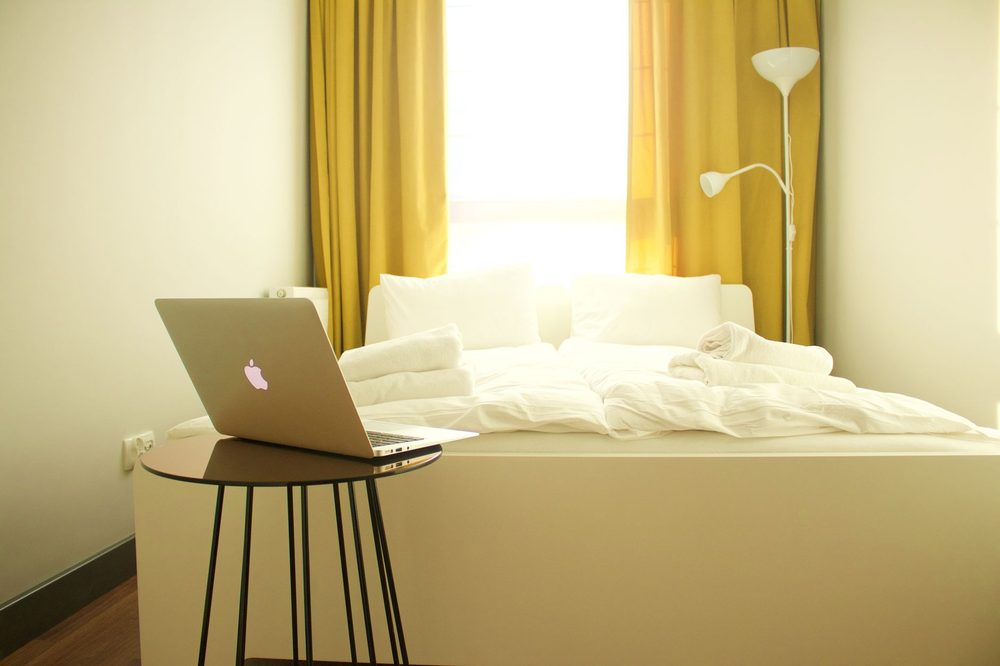
30-Day Plan — Day 1
Understanding Surface Clarity
In this apartment
In her 1 BHK in Pune, Neha struggles with clutter on her coffee table, which is piled with magazines, remotes, and a half-empty coffee cup. She decides to implement the 80% Surface Rule to create a more serene space.
80 percent surface clarity is unobstructed usable area — a planning target, not a visual-calm score.
This book is one 30-day transformation, then a weekly reset, then long-term maintenance. When a heading says 30-Day Plan — Day 4, that is the same Day 4 as the Action Calendar. Room kits, the swatch workbook, and the weekly reset are supporting modules — they are not a second Day 1. Classify every framework before you treat it as a rule. Hard constraint: manufacturer instructions, electrical work for qualified professionals, and anything that blocks a required exit. Planning target: useful starting points such as 80 percent unobstructed surface area or a preferred prep patch. Heuristic: optional design techniques such as 60/30/10, 5-7-9, 3-2-1, One-In-One-Out, and Anchor/Accent/Balance. Personal preference: palette accent, TV distance, and how odd or even a grouping looks to you. A surface is any horizontal plane that the eye reads as part of the room composition. In a 1 BHK, this includes coffee tables, end tables, TV consoles, bedside tables, dressers, kitchen counters, open shelves, and the tops of wardrobes and refrigerators. By focusing on these surfaces, you can create a more organized and visually appealing environment.
For this book, 80 percent surface clarity means approximately 80 percent of the usable horizontal surface remains physically unobstructed. That is a planning target for empty area, not a measurement of visual calm. Three large objects can cover half a table and still look louder than ten tiny objects covering a fifth of it. Measure unobstructed area separately from visual noise.
To maintain the target, check that about 80 percent of each usable horizontal surface stays physically unobstructed. Then, separately, run the visual-noise audit. Clarity of area and calm of appearance are two different checks.
Before you move on
List every usable horizontal surface.
Estimate unobstructed area (planning target: about 80 percent clear).
Score visual noise separately; do not mix the two.
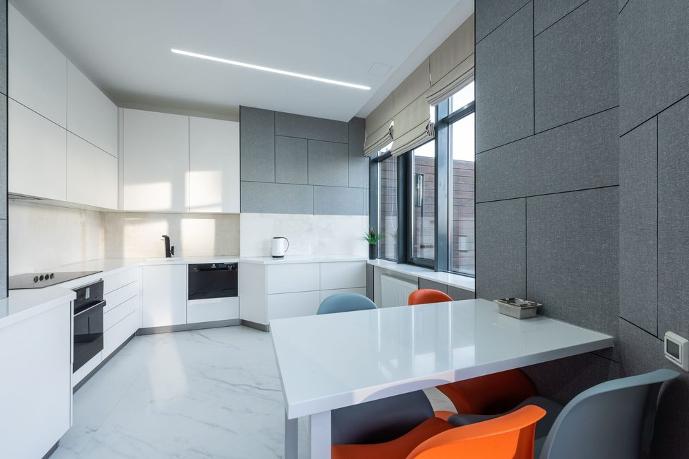
30-Day Plan — Day 2
Implementing the Keep, Edit, Exit System
In this apartment
In her Bengaluru rental, Aditi faces a cluttered kitchen counter filled with appliances and utensils. She decides to sort through her items using the Keep, Edit, Exit system to create a more functional cooking space.
Keep, Edit, Exit is a sorting heuristic. The Out Box is immediate; disposal follows a practical schedule.
When sorting through items, use the Keep, Edit, Exit approach. For every item you touch, decide if it should be kept because it is frequently used or adds value, edited by reducing or consolidating, or exited from your home through donation or recycling.
Make these decisions quickly to avoid second-guessing. If unsure, place the item in the Edit group and revisit it during your visual noise audit. Move Exit items into a designated Out Box immediately. Schedule donation, recycling, resale, or disposal as soon as practical. Seventy-two hours is a momentum target, not a disposal deadline. Donation-center hours, recycling schedules, large-item pickup, selling, and e-waste rules can take longer. Do not throw away a useful or regulated item only because 72 hours passed.
This system not only helps you declutter but also ensures that every item in your home serves a purpose, contributing to a more organized and peaceful environment.
Before you move on
Sort items using Keep, Edit, Exit categories.
Quickly decide on each item to maintain momentum.
Move Exit items to the Out Box immediately; schedule donation, recycling, resale, or disposal as soon as practical.
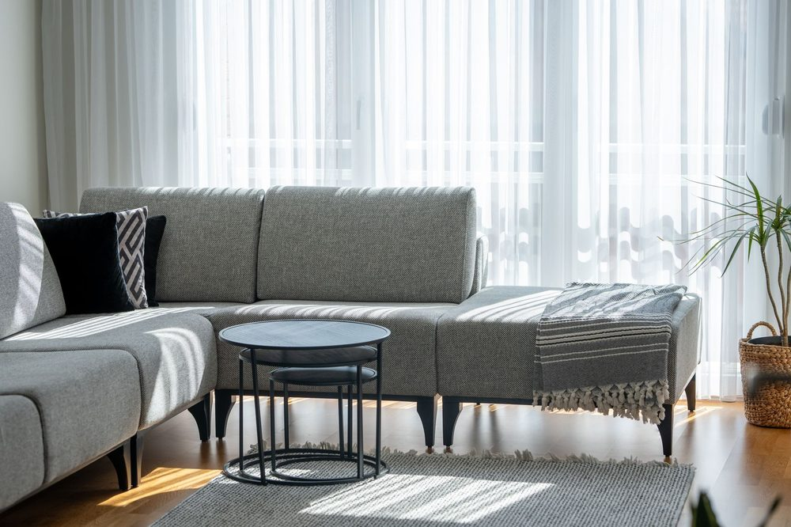
30-Day Plan — Day 3
Conducting the 5 Point Visual Noise Audit
In this apartment
Ravi, living in a compact Mumbai flat, realizes his living room feels chaotic due to visual clutter. He decides to conduct a 5 Point Visual Noise Audit to identify areas for improvement.
Visual-noise scores are subjective 0–5 ratings. Under 7 is an internal target, not a proof of calm.
The 5-point visual-noise audit is a subjective design check, not an objective measurement. Score each of five factors from 0 to 5: density, contrast, height variance, reflective glare, and cord chaos. Anchors: 0 negligible, 1 very low, 2 low, 3 moderate, 4 high, 5 severe. The maximum total is 25.
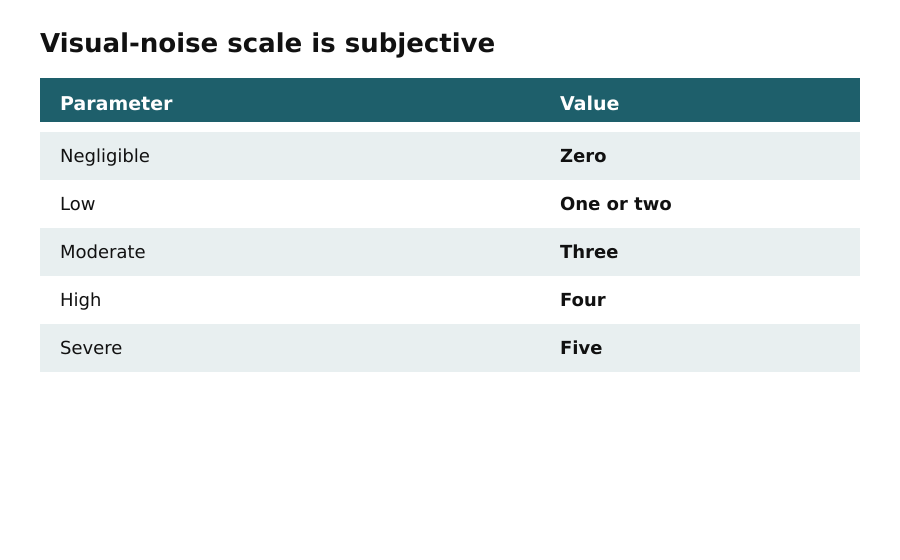
Score each factor 0 to 5. Maximum total is 25. Under 7 is a planning target, not a measurement.
A total under 7 is an internal planning target, not a proof of calm. Two rooms can both score 6 in different ways — one with moderate density and cords, another with a single severe factor. Use the total as a prompt to work the highest scores first. Trust your eye more than the number.
By identifying areas of high visual noise, you can prioritize decluttering efforts and make informed decisions about what to keep, edit, or exit from your space.
Before you move on
Score density, contrast, height variance, glare, and cords from 0 to 5.
Write the anchors: 0 negligible through 5 severe.
Treat a total under 7 as a subjective planning target.
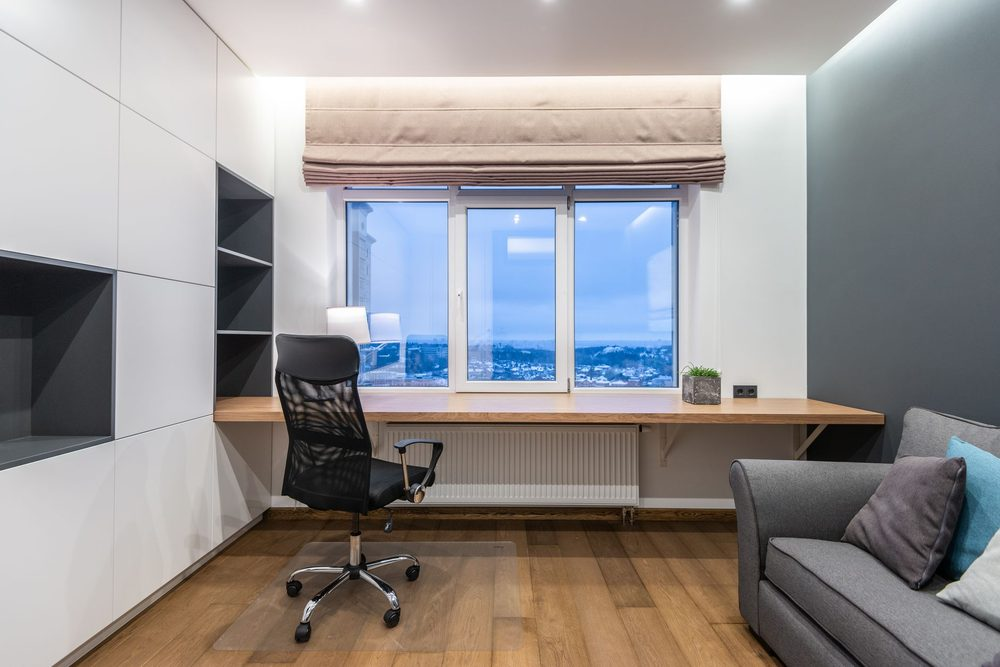
30-Day Plan — Day 4
Establishing a Zonal Layout Grid
In this apartment
In her 1 BHK in Chennai, Meera struggles with item drift in her living room. She decides to create a Zonal Layout Grid to assign specific areas for different tasks and reduce clutter.
A zonal layout prevents item drift and supports daily micro resets.
Imagine each room as a grid divided into zones for specific tasks. For example, in the living room, you might have zones for seating, media, coffee, and entry. Assign each surface to a zone based on its primary use, ensuring that items only live in their designated areas.
This approach not only helps maintain order but also makes it easier to reset your space quickly. When every item has a home, it becomes simpler to return surfaces to their 80 percent clarity after use.
Regularly review your zonal layout to ensure it still meets your needs and adjust as necessary to maintain a functional and organized environment.
Before you move on
Create a Zonal Layout Grid for each room.
Assign surfaces to specific zones based on their use.
Review and adjust zones regularly to maintain functionality.
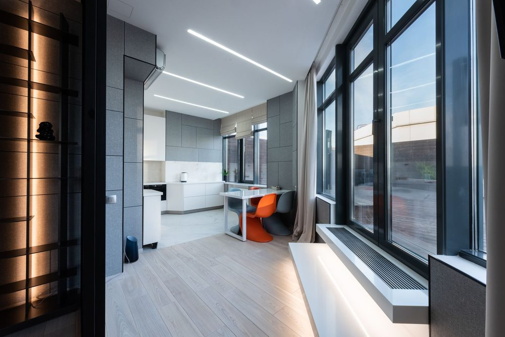
30-Day Plan — Day 5
Planning Your 30-Day Calendar
In this apartment
In her 1 BHK in Delhi, Simran plans her 30-day transformation by blocking time for decluttering sessions and donation runs, ensuring she stays on track with her goals.
The dedicated Action Calendar lists Days 1–30. Supporting modules do not restart at Day 1.
The 30-day promise lives in one place: the 30-Day Action Calendar later in this book. Each calendar day has one concrete task. Method chapters along the way are labeled 30-Day Plan — Day N so they match that calendar. Room kits, the swatch workbook, and the weekly reset are supporting modules.
Week 1 assesses, measures, and locks a palette after fixed finishes. Weeks 2 and 3 work living room, bedroom, and kitchen. Days 24–30 finish leftover installs, re-check unobstructed area and visual noise separately, and schedule the Out Box. The weekly reset starts after Day 30. It is maintenance, not a fourth transformation.
Block three to five hours a week plus a short daily micro-reset. If you miss a day, keep the Day number — do not start a new Day 1 in the next chapter.
Before you move on
Open the Action Calendar and find Day 1 through Day 30.
Treat method-chapter Day N as the same calendar day.
Save weekly reset for after Day 30.
Chapter
Design DNA: Build Your Unified Color Palette
Creating a unified color palette is essential for a cohesive and calming home environment, especially in compact spaces like a 1 BHK. This chapter guides you through the process of selecting colors that harmonize with your existing finishes and how to apply them effectively throughout your home.
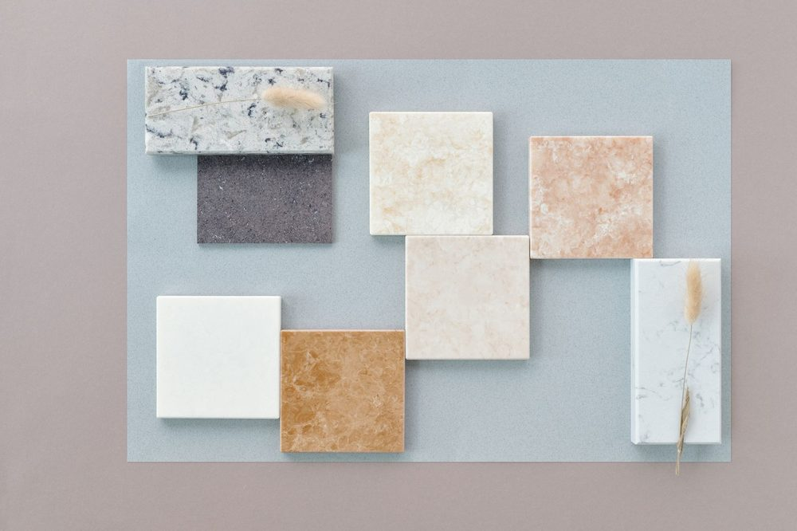
30-Day Plan — Day 6
Understanding Your Fixed Finishes
In this apartment
Riya, a resident of a 1 BHK in Pune, stands in her living room with beige floor tiles and light wooden doors. She notices the warm undertones in her flooring and the cool undertones in her white kitchen cabinets.
Identifying undertones in fixed finishes is crucial for selecting a harmonious base neutral.
Begin by auditing the undertones of your fixed finishes. In Riya's case, she examines her flooring, doors, window frames, and kitchen cabinets. She observes that her beige tiles have a warm undertone, while her cabinets appear cool under the light.
Use plain white printer paper to help identify these undertones. By placing the paper next to the finishes, Riya can see that the warm tiles make the white look bluer, confirming their warm undertone. This step is essential to ensure her color choices will harmonize throughout her home.
Repeat this process in the bedroom and kitchen to gain a comprehensive understanding of the undertones present in her living space. Knowing whether her environment skews warm, cool, or neutral will guide her in selecting a base neutral that complements these fixed elements.
Before you move on
Conduct a fixed finishes undertone audit in each room.
Use white paper to compare undertones effectively.
Document your findings for future reference.
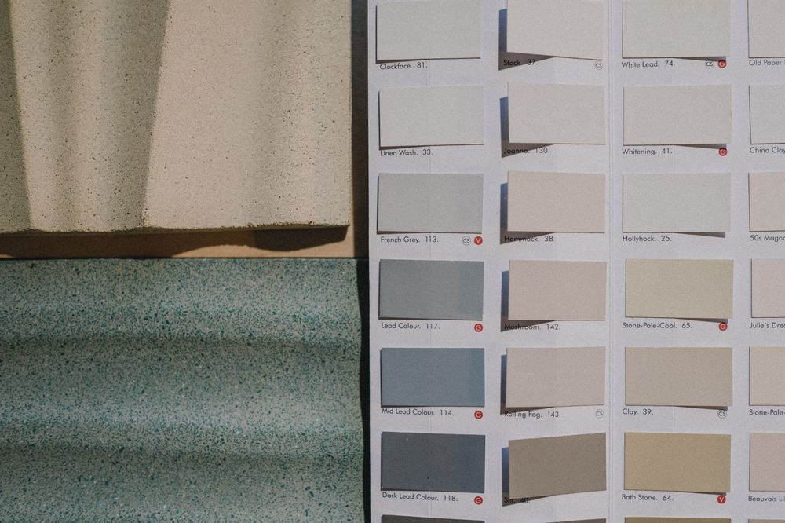
30-Day Plan — Day 7
Choosing Your Base Neutral
In this apartment
In her Pune apartment, Riya selects a base neutral that complements her warm beige flooring and wooden doors, opting for a soft greige that enhances the calmness of her space.
The base neutral supports the dominant existing color. It does not have to become 60 percent of the room.
After completing her undertone audit, Riya identifies that her environment skews warm due to the beige tiles. She decides against a trendy gray that would clash with her warm finishes. Instead, she opts for a soft greige that aligns with her flooring and wooden accents.
Selecting a base neutral that harmonizes with existing undertones is crucial. A soft greige will not only complement her warm floors but also provide a calming backdrop for her living space.
In small areas like a 1 BHK, softer neutrals can help reduce visual noise and create a more spacious feel. Riya's soft greige supports the dominant field she already has. She does not try to force a new primary color over 60 percent of a rental she cannot repaint.
Before you move on
Select a base neutral that harmonizes with your undertone audit.
Avoid trendy colors that do not complement your fixed finishes.
Document your base neutral choice for consistency.
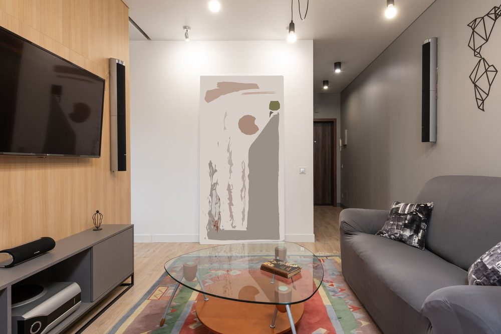
30-Day Plan — Day 8
Allocating Colors with the 60-30-10 Ratio
In this apartment
Riya plans her color allocation for her Pune apartment, applying the 60-30-10 ratio to ensure balance and harmony throughout her living space.
60/30/10 is a visual heuristic. Fixed finishes already occupy part of the field.
Treat 60/30/10 as a visual proportion guideline rather than an exact measurement of square footage. Fixed finishes and existing furniture may make exact percentages impractical. Apply it only after accounting for what cannot be changed: fixed finishes first, then the dominant existing color, then a supporting color, then an accent. Riya's rental already has beige flooring and wood furniture, so those count toward the dominant field before she adds greige textiles.
For the thirty percent secondary color, Riya chooses a desaturated sage that complements her base neutral and adds depth to her space. This color will appear in smaller furnishings and supporting textiles, such as cushions and throws.
Finally, Riya selects a muted terracotta as her ten percent accent color, which will be used sparingly in decorative items like vases or art pieces. This intentional use of color will bring energy and focus to her home without overwhelming it.
Before you move on
Sketch a 60/30/10 guideline after listing fixed finishes; do not calculate exact area.
Document where each color will be applied in your home.
Ensure that the secondary and accent colors harmonize with the base neutral.
30-Day Plan — Day 9
Mapping Light and Testing Colors
In this apartment
Riya creates a Light Ladder for her Pune apartment, observing how natural and artificial light affects her chosen colors throughout the day.
Mapping light helps understand how colors shift and appear in different lighting conditions.
Riya draws a simple grid for her Light Ladder, noting the times of day she will observe her living room, bedroom, and kitchen. She records where natural light enters and the type of artificial light used in each room.
Standing in each room at the designated times, Riya notes how the colors appear under different lighting conditions. She finds that warm light amplifies the warm undertones of her soft greige, while cooler light can make it appear more muted.
This mapping process is essential for ensuring that her color choices hold up throughout the day. Riya realizes that her kitchen, which reads cool in the evening due to daylight bulbs, requires careful selection of textiles to avoid a muddy appearance.
Before you move on
Create a Light Ladder grid for each room.
Observe and document how colors appear at different times of day.
Adjust color selections based on light observations.
Chapter
Living Room Room Kit: Layouts, Zones, And Visual Anchors
Living Room Room Kit: Layouts, Zones, And Visual Anchors Chapter Introduction Step into your living room and imagine a space that instantly lowers your shoulders. The floor is clear, the seating feels inviting, the media wall looks seamless, and every surface is calm. You can trace an easy pathway from the entry to the balcony or bedroom without sidestepping stray stools or an overflowing console.
Room kit
Living Room Room Kit: Layouts, Zones, And Visual Anchors
The floor is clear, the seating feels inviting, the media wall looks seamless, and every surface is calm.
Living Room Room Kit: Layouts, Zones, And Visual Anchors Chapter Introduction Step into your living room and imagine a space that instantly lowers your shoulders. The floor is clear, the seating feels inviting, the media wall looks seamless, and every surface is calm. You can trace an easy pathway from the entry to the balcony or bedroom without sidestepping stray stools or an overflowing console. This chapter shows you how to get there with a measured plan that fits a typical 1 BHK, and it does so without sacrificing livability.
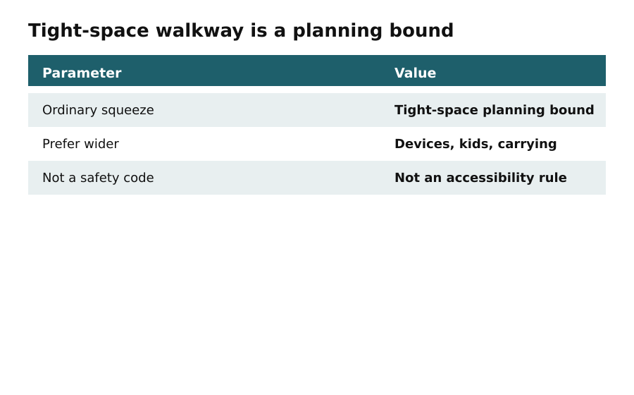
For ordinary household circulation, 28 inches can be a tight-space planning lower bound. Wider is better with mobility devices, children, pets, or carrying. This is not an accessibility threshold.
Building on the palette you locked in earlier, you will map the room into zones, choose right size anchor pieces, and design cable and lighting plans that protect your 80 percent surface goal. By the end, you will have a layout you can tape on the floor, a shortlist of correctly proportioned furniture, and renter friendly upgrades that add polish fast.
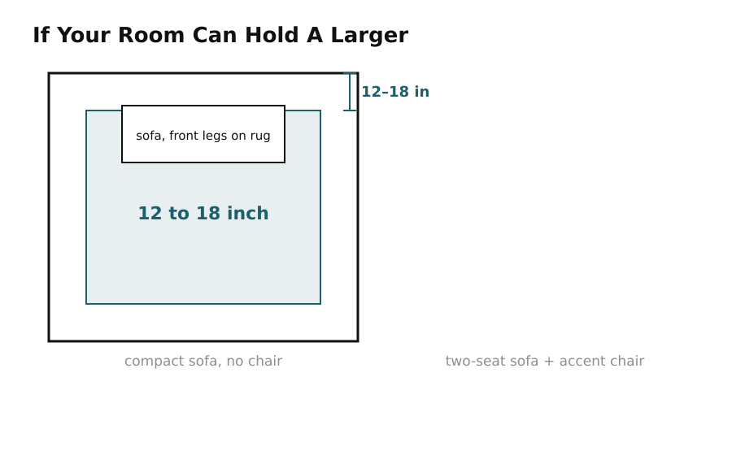
If your room can hold a larger rug without breaking the 12 to 18 inch border rule, choose it. Ensure at least 6 inches of rug under the front legs of all seating.
Most 1 BHK living rooms are asked to do everything. They host conversations, movie nights, quick meals, remote work, and drop zones for bags and mail. In a compact footprint, that multi use demand creates two kinds of pain. Flow gets blocked by furniture that is too large or wrongly placed. Visual noise builds around the media wall and shelves, where devices, cords, remotes, and decor compete for attention. When the room does not breathe, you feel restless, and when surfaces are busy, your eyes tire.
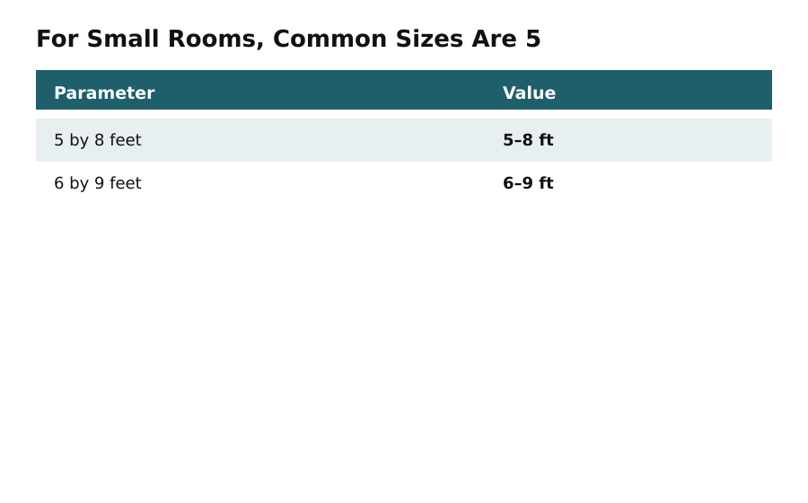
For small rooms, common sizes are 5 by 8 feet and 6 by 9 feet.
Common constraints make this worse. Narrow rooms push sofas against walls and squeeze walkways. Off center windows pull the eye to one side and make furniture look skewed. Structural columns can chop the room into awkward pockets. Most renters inherit ceiling fixtures that are harsh, curtains hung too low, and a media console with tangled cables spilling over. Without a plan, you end up guessing, then accumulating pieces that do not fit. The result is a room that feels smaller than it is and does not align with your unified palette.
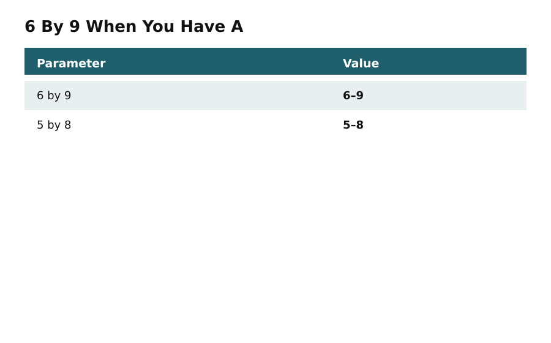
Use 6 by 9 when you have a two seat sofa and one accent chair, use 5 by 8 for a compact sofa with no chair.
The Room Kit pairs a simple zoning method with measurement rules and visual anchors. You will use the Zonal Layout Grid to define conversation, media, and circulation zones, so furniture and walkways have clear boundaries. You will size anchor pieces first, then harmonize everything else around them. Anchors carry visual weight and reduce the need for many small items, which protects your 80 percent surface target.
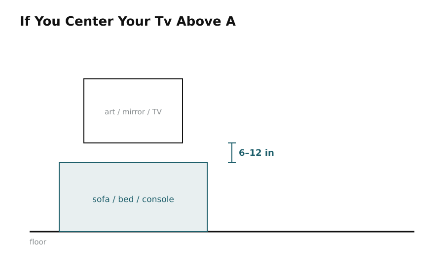
If you center your TV above a console, choose a console as wide as your sofa, or at least the TV width plus 6 to 12 inches on each side. Mount rods close to the ceiling or at least 8 to 12 inches above the window frame.
You will apply formulas that prevent misfit purchases. The Right Size Rug Formula keeps the seating group on the rug and the edges calm. The media console width rule and sofa to TV viewing distances match device comfort with room scale. Coffee table dimensions and spacing ensure safe movement and reachable surfaces. Curtain placement and lighting layers add height, warmth, and focus without any renovation. Art placement uses your palette to connect the eye line across the room.
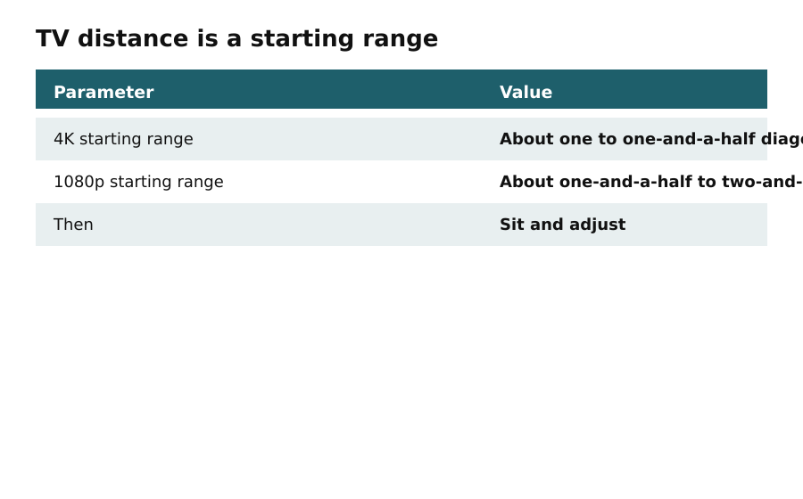
Viewing comfort depends on resolution, content, eyesight, size, and preference. Use 5 to 7 feet only as a starting range for a 55-inch 4K set.
Because cables can sabotage calm, you will set up a Cable Line Disguise System before styling. You will choose storage using a Media Console Fit Matrix based on how many devices and cords you have, and how much you want visible. Finally, you will style surfaces with the Anchor Accent Balance triangle, so your palette comes through with minimum objects.
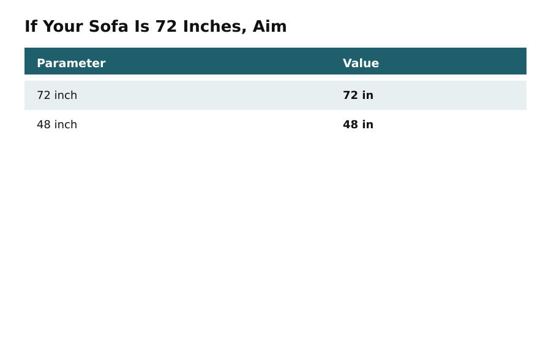
If your sofa is 72 inches, a coffee table around two thirds of that length is a starting size, not a required fit.
Defining Zones With The Zonal Layout Grid Think of your living room floor as a simple grid that organizes activity. Divide the room into three zones. The conversation zone holds your sofa and chairs. The media zone anchors the TV and console. The circulation zone creates clear walkways from entry to seating to balcony or bedroom doors. Use painter's tape to draw paths that are 30 to 36 inches wide from the entry to the seating and from seating to doors. This width supports comfortable passage and quick turns with trays or laundry baskets. If your footprint is tight, 28 inches can be a tight-space planning lower bound for ordinary household circulation. Wider clearances are preferable where mobility devices, children, pets, or frequent carrying are involved. This is not an accessibility or safety threshold. Place the conversation zone so it does not pinch these paths. The media zone should sit opposite seating without blocking circulation. If you have a combined living and dining area, the dining table belongs outside the circulation path, not in the center of it.
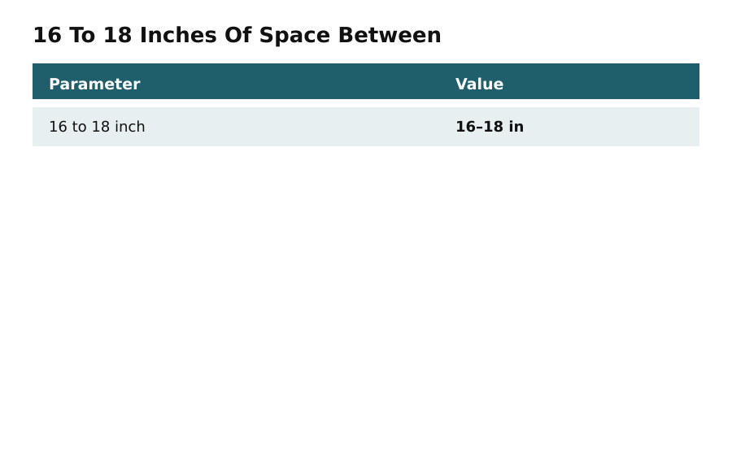
Keep 16 to 18 inches of space between the sofa edge and the coffee table all around.
Sizing Anchor Pieces Sofa Placement And Scale Choose the sofa first. In a narrow room, a two or two and a half seat sofa with slim arms often beats a bulky three seat sofa. Position the sofa so that the centerline aligns with the center of the media zone or balances the window. If the window is off center, use the rug and art to create a new visual center on the wall you choose for the media zone.
Right Size Rug Formula A rug should sit under the front feet of the sofa and chairs in the conversation zone. This connects the seating into one visual island. Measure the seating group after you place pieces, then apply this formula. Leave 12 to 18 inches of floor between rug edges and walls on the long sides. Ensure at least 6 inches of rug under the front legs of all seating. For small rooms, common sizes are 5 by 8 feet and 6 by 9 feet.
Use 6 by 9 when you have a two seat sofa and one accent chair, use 5 by 8 for a compact sofa with no chair. If your room can hold a larger rug without breaking the 12 to 18 inch border rule, choose it. A proportionally larger rug can make a small room feel more unified and visually spacious. A rug that is too large for the room, or that pinches walkways, can do the opposite. Coffee Table Size And Distance Choose a coffee table that is roughly two thirds the length of your sofa. If your sofa is 72 inches, a coffee table around two thirds of that length is a starting size, not a required fit. Keep 16 to 18 inches of space between the sofa edge and the coffee table all around. This spacing allows comfortable knee room and safe passage.
Table height should be near the sofa seat height. A difference of one to two inches is comfortable. Media Console Fit And Viewing Distances Use this width rule. If you center your TV above a console, choose a console as wide as your sofa, or at least the TV width plus 6 to 12 inches on each side. This creates balance under the screen and helps disguise cords behind the console edges.
Treat viewing distance as a starting range, not an optimal distance. Comfort depends on resolution, content, eyesight, TV size, personal preference, and viewing angle. A common starting range for 4K is about 1 to 1.5 times the screen diagonal — for a 55-inch 4K set, that is roughly 5 to 7 feet. For 1080p, a common starting range is about 1.5 to 2.5 times the diagonal. Sit, watch something you actually watch, and adjust. In tight rooms, favor a slightly smaller screen and a console with closed storage to control visual noise.
Curtain Placement For Height And Calm Hang curtains high and wide to stretch the perceived height of the room. Mount rods close to the ceiling or at least 8 to 12 inches above the window frame. Extend rods 8 to 12 inches beyond each side of the window so curtains can stack off the glass. Use floor length panels that just kiss the floor. Match fabric to your palette card so the vertical lines reinforce your chosen neutral and accent, not fight it.
Layered Lighting For Purpose And Mood Plan three layers. Ambient lighting fills the room. This is usually a ceiling fixture or a pair of floor lamps that bounce light off the ceiling. Task lighting focuses on reading or work, such as a table lamp near the sofa arm or a floor lamp by a chair. Accent lighting adds glow to the media wall or art, using picture lights, small lamps on the console, or LED strips inside shelves. As a comfort reference, aim for wall to space ambient light that feels soft, then add task lamps where activities happen. If you like numbers, living rooms often feel good around 10 to 20 lumens per square foot for ambient with stronger pools of 30 to 50 lumens for reading.
Art Placement For Cohesion Use art to bridge furniture and your palette. Above a sofa, hang art so the bottom edge is about 8 to 10 inches above the sofa back. Ensure the width of the art or grouping is 60 to 75 percent of the sofa width. For eye level pieces, center the midpoint around 57 to 60 inches from the floor. Keep frames and matting aligned with your palette card, favoring textures over many colors to limit visual noise.
Cable Line Disguise System Cables are a frequent source of clutter around media areas. Design the cable plan before styling. Start by drawing the path of every cord from device to power. Choose cable routes that run along edges rather than across surfaces. Use adhesive backed raceways that match your wall color to conceal cords vertically and horizontally. Use fabric cord covers for cords that need to drop from a wall mounted TV to the console.
Bundle cables with reusable ties and label both ends. Place a power strip inside the console if possible, then pass cords through a small grommet or a neat hole at the back. Keep remotes in a single box or tray inside a drawer or on the console if you have no drawers. The goal is to protect surfaces around the console so they remain 80 percent clear.
Media Console Fit Matrix Choose open or closed storage based on what you own and your tolerance for visual exposure.
doors and one open shelf for a set top box or sound bar.
closed doors and a central open section with an integrated cable hole.
drawers for small items, and one ventilated open shelf for game systems.
hidden pull out shelf for the projector. Use ceiling cable routing if allowed. Styling With The Anchor Accent Balance Triangle Styling follows your palette card and reinforces your anchors. Each styled surface should include an anchor piece, an accent, and a balance element. An anchor is a substantial object that grounds the surface, such as a lamp or a single art book. An accent brings texture or color, such as a small bowl or a plant. Balance is negative space. It is the deliberate decision to leave most of the surface empty. Repeat this triangle across shelves and consoles so no single surface attracts all the attention.
Furniture Placement Decision Tree Use this quick decision guide for common constraints.
opposite the entry to hold an adequate walkway behind or in front. Choose a slim arm sofa and a round coffee table to ease flow.
not the window. Use curtains hung high and wide to expand and visually recenter the window.
or a plant group next to it on the entry side. Keep seating arranged around the rug so the column is outside the conversation zone. Implementation Strategy Follow this sequence to move from plan to tape to furniture.
inches wide. Decide on conversation and media zones that do not pinch these paths.
media zone. Leave enough space behind or in front for your taped walkway.
size. Apply the Right Size Rug Formula. Adjust until all front legs sit on the rug and the border to walls sits between 12 and 18 inches.
that length. Confirm 16 to 18 inches of clearance.
sofa or TV width plus 6 to 12 inches each side. Check viewing distance based on your screen size and resolution. Adjust device placement inside the console.
them so panels stack off glass. Choose fabric that matches your palette card.
Use existing outlets. Plan lamp heights and bulb warmth that suits your palette and finishes.
sofa width and hang at the recommended height.
label before any decor comes out. Test everything.
surfaces 80 percent clear. Real-World Application Case Study One, Narrow Ten By Fifteen Foot Room With Balcony Door Entry on the short wall, balcony door opposite. Tape a 32 inch path from entry to door along one side. Place a two and a half seat sofa on the long wall facing the media zone. Use a 6 by 9 rug centered on the sofa, leaving 14 inches to the walls. Select a 44 inch round coffee table to ease flow around corners. Choose a media console at 60 inches wide for a 50 inch TV, with closed doors and one open shelf. Viewing distance sits at about 6.5 feet. Hang curtains to the ceiling, extending rods 10 inches beyond the door frame. Lighting includes a ceiling fixture plus a floor lamp near the sofa arm. Art above the sofa at 60 percent of sofa width. Cables concealed with adhesive raceway down the wall and through the console.
Results, clear path to the balcony, seating feels centered, and surfaces stay sparse. Case Study Two, Off Center Window With Structural Niche Room has a window two feet off center on the media wall and a shallow niche near the entry. Tape a 30 inch path that curves around the niche. Place sofa opposite the planned media wall center, not the window. Use curtains mounted high and extended 12 inches past the window to visually widen it. Choose a 5 by 8 rug for a compact two seat sofa and an armless accent chair. Pick a 55 inch TV on a 72 inch console to balance the wide curtain span. Place a small console in the niche as an entry perch with a single tray for keys. Lighting includes a table lamp in the niche and a task lamp near the chair. Cables routed inside adhesive raceways, with labels so devices can be swapped without stress. The window looks centered thanks to the curtain strategy and the console width, and the niche functions without stealing space.
Case Study Three, Combined Living Dining With Kids' Toy Overflow Room has a dining table near the entry and toys that migrate onto the coffee table. Tape two paths at 30 inches. One path from entry to seating along the wall, one path from seating to bedroom door. Float a 6 by 9 rug away from the wall to hold seating and maintain paths. Choose a bench style coffee table with two drawers to stash toys. Select a console with drawers for remotes and games. Viewing distance set for a 43 inch 4K TV at 5.5 feet. Curtains hung high, with panels that match the base neutral of the palette card. Lighting includes warm bulbs to soften evenings. The Cable Line Disguise System keeps cords off the floor where toys roll.
Results, toys have a home, paths are clean, and the living area feels distinct from dining. Common Pitfalls
Do this
Tape your Zonal Layout Grid and mark 30 to 36 inch circulation paths.
Place the sofa and test a temporary rug footprint with paper or fabric.
Measure for the Right Size Rug and shortlist two sizes that fit within
Calculate coffee table dimensions as two thirds of sofa length and
Measure TV diagonal and room distance to choose a console width
Install curtain rods high and wide and order floor length panels in your
Create a three layer lighting plan and gather bulbs with consistent
Select and hang art scaled to your sofa width and eye line.
Build your Cable Line Disguise System with raceways, covers, ties,
Photograph the room and compare to your palette card to confirm
Before you move on
Map zones first, then place furniture to protect 30 to 36 inch walkways.
Size anchor pieces with formulas so the room looks balanced and
Rug edges and front legs matter. A properly sized rug makes the room
Media console width should balance the TV and hide cords. Use
Match viewing distance to screen size and resolution for comfort.
Hang curtains high and wide to create instant vertical presence.
Layer ambient, task, and accent lighting to avoid harsh glare.
Place art at eye level and scale it to the seating for cohesion with your
Conceal and route cables before styling to protect the 80 percent
Style with the Anchor Accent Balance triangle so every surface feels
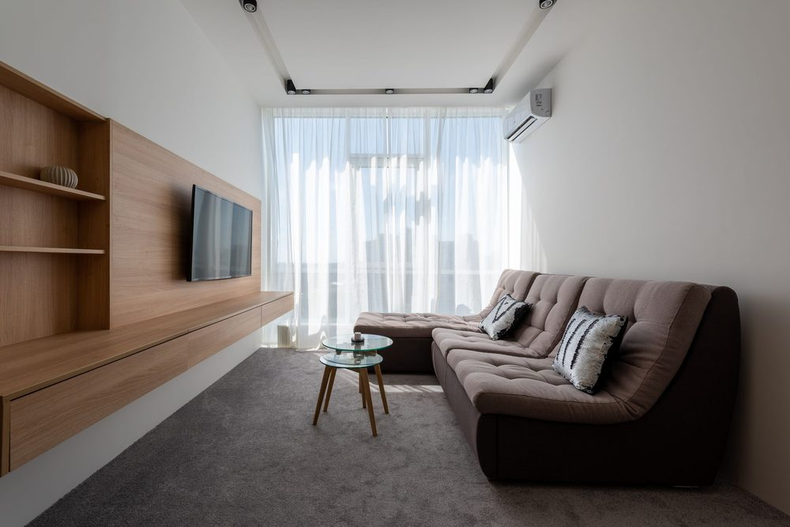
Chapter
Living Room Declutter And Styling: Apply The 80% Rule
Creating a calm living room is achievable within days by focusing on decluttering and intentional styling. This chapter provides a structured approach to transform your space into a functional and aesthetically pleasing environment.
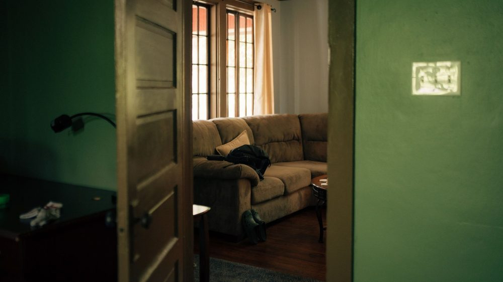
30-Day Plan — Day 10
5 Point Visual Noise Audit
In this apartment
Ravi lives in a 1BHK in Pune with a 9-foot living room. He notices that his TV console is cluttered with remotes, a stack of magazines, and various cables. To tackle this, he decides to run a 5 Point Visual Noise Audit to identify the loudest surfaces in his living room.
Use the same 0–5 factor scale as Day 3. Surface-by-surface notes are extra, not a second scoring system.
Stand at the main entry, then at your primary seat. Score the same five factors used on Day 3: density, contrast, height variance, reflective glare, and cord chaos. Each factor is 0 negligible through 5 severe. Maximum total is 25. A total under 7 is a subjective planning target.
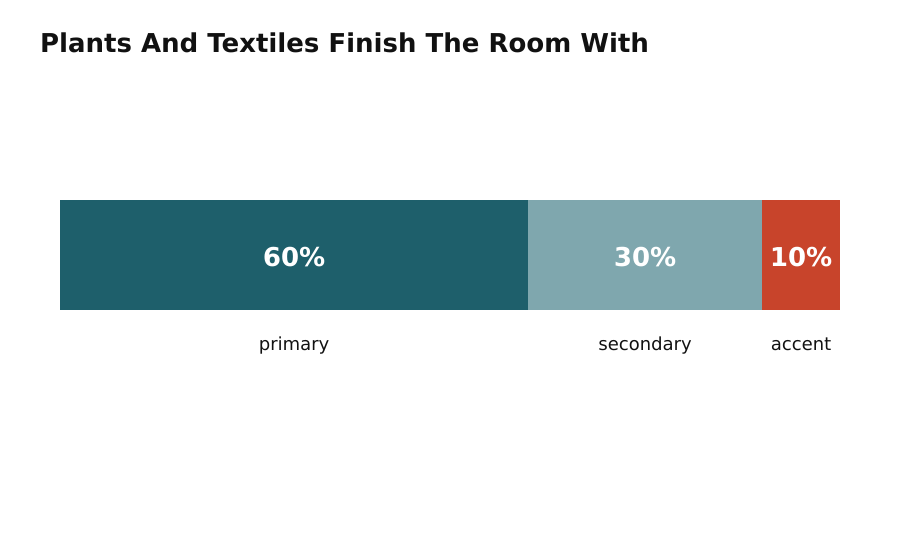
Plants and textiles finish the room with the 60 30 10 color ratio so your palette leads and small decor stays minimal.
Then note which surface is loudest — console, coffee table, side table, open shelf, or entry perch. The highest factor and the loudest surface are your first targets. Do not mix this score with the 80 percent unobstructed-area check.
Above the sofa, choose art that is 50 to 75 percent of the sofa width, and hang so the center is at about 57 to 60 inches from the floor.
Two rooms can share a total of 6 and still need different work. A 3 on density plus a 3 on cords is not 'fine' just because the total is under 7.
Before you move on
Score the TV console, coffee table, side tables, open shelves, and entry surface from your main entry and main seat.
Identify the surface with the highest score to target first.
30-Day Plan — Day 11
Surface Parking Zone
In this apartment
Priya, living in a compact Bengaluru rental, struggles with a cluttered coffee table that collects everything from books to chargers. She sets up a Surface Parking Zone to reset her surfaces effectively.
Create a designated area to evaluate items in neutral light, allowing for better decision-making.
Create a temporary zone where all items will land while you reset each surface. Use the floor near a window or a dining table. Lay a light-colored cloth or sheet that allows you to see items in neutral light.
Place three boxes or baskets labeled KEEP, EDIT, EXIT. Keep means it belongs in the living room and will return to a surface. Edit means it belongs in the living room but may move to closed storage or get a different home. Exit means it leaves the room or leaves your home through donation, recycling, or trash.
This method allows you to assess each item without the emotional pull of its usual spot, making it easier to decide what stays and what goes.
Before you move on
Set up a light cloth or sheet in a neutral area.
Label three boxes as KEEP, EDIT, EXIT.
Gather all items from the target surface into the Parking Zone.
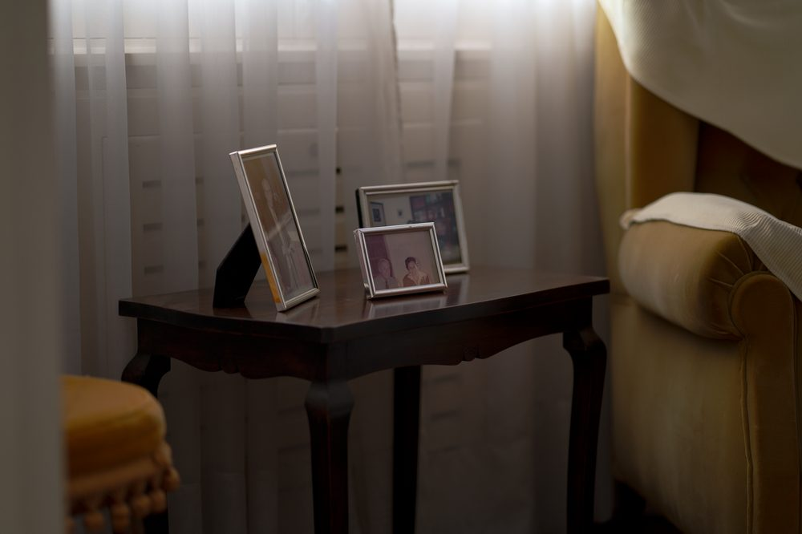
30-Day Plan — Day 12
3 2 1 Declutter Sprint
In this apartment
Anita, residing in a Mumbai flat with a window on only one side, faces a cluttered side table. She decides to implement the 3 2 1 Declutter Sprint to quickly clear and organize her space.
Use a timed approach to declutter efficiently and avoid overthinking.
For each target surface, set a timer for six minutes and move in this sequence: three minutes to clear everything off the surface, even things you think will stay; two minutes to group like items in the Parking Zone; and one minute to decide quickly on KEEP, EDIT, EXIT choices based on function and your palette card.
This pace stops overthinking and allows you to gain momentum. You can repeat the sprint for each surface, giving yourself up to two sprints per surface if needed.
By maintaining a quick pace, you can effectively clear clutter and make decisions without getting bogged down by indecision.
Before you move on
Set a timer for six minutes for each surface.
Clear the surface completely in three minutes.
Group like items in the Parking Zone for two minutes.
Make quick decisions in one minute.
30-Day Plan — Day 13
One In, One Out Rule
In this apartment
Vikram, living in a small 1BHK in Pune, has a growing collection of books and decor items. He implements the One In, One Out rule to maintain balance in his living room.
One-In-One-Out is a heuristic for discretionary decor and clothing, not for the entire home.
Apply One-In-One-Out only to non-essential decor, clothing, and discretionary household items. Do not use it to remove essential cookware, safety equipment, replacement appliances, necessary clothing, accessibility equipment, consumables, or tools. For discretionary decor: if a new vase enters, an old vase exits.
Used that way, it is a heuristic for keeping discretionary stuff from creeping back onto surfaces. It is not a household law.
By adhering to this rule, you ensure that your living space remains manageable and visually calm.
Before you move on
For discretionary decor and clothing, remove one comparable item when a new one enters.
Evaluate your current items regularly to maintain balance.
Keep track of your collections to avoid overaccumulation.
30-Day Plan — Day 14
5 7 9 Styling Composition Rule
In this apartment
Sita, in her Bengaluru apartment, wants to style her coffee table while adhering to the 5 7 9 rule for composition. She aims for a visually appealing yet functional arrangement.
5-7-9 is an optional composition heuristic. Even numbers are allowed.
When you are ready to restyle, you may try odd-number groupings as an optional composition heuristic. They can create visual movement, but they do not universally produce better composition. Groups of three on a coffee table, or five to nine on a bookcase, are starting ideas — even numbers are fine if the arrangement reads calm.
Plants and textiles finish the room with the 60 30 10 color ratio.
Within a grouping, vary height and texture, then leave negative space. The eye needs rest as much as the room does. Think of your group as a small landscape, with a taller element, a mid-height element, and a low grounding element.
This approach ensures that your decor feels intentional and not overwhelming, allowing each piece to shine.
Before you move on
Try odd-number groupings if they help; skip them if they do not.
Vary height and texture within each grouping.
Leave negative space to avoid clutter.
30-Day Plan — Day 15
Anchor, Accent, Balance Triangle
In this apartment
Rohit, living in a compact Mumbai flat, wants to style his open shelves using the Anchor, Accent, Balance triangle for a cohesive look.
Create a visually appealing arrangement by using a geometric approach to styling.
This is your styling geometry. Place an anchor first, usually the largest or most grounding object. This could be a stack of two closed storage boxes on a lower shelf, a large bowl on the coffee table, or a substantial lamp on a side table.
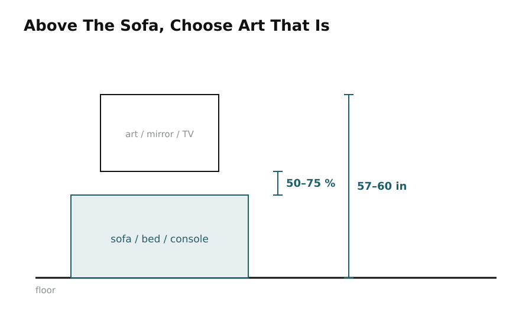
Above the sofa, choose art that is 50 to 75 percent of the sofa width.
Next, add an accent with some visual interest, such as a textured vase, a small plant, or a sculptural object. Finally, add a balance piece that picks up a tone from your palette card and weighs the third point in your mental triangle.
Always allow space between points to create a sense of calm and organization in your decor.
Before you move on
Identify an anchor piece for your arrangement.
Add an accent and a balance item to complete the triangle.
Ensure there is negative space between items.
Chapter
Bedroom Room Kit: Storage, Sleep, And Serenity
Bedroom Room Kit: Storage, Sleep, And Serenity Chapter Introduction You have already lightened your living room surfaces and tuned your palette, which means your bedroom is ready to do something special. This chapter is the quiet engine of your 30 day transformation. It turns your unified color palette into calm, and it captures every centimeter of a compact 1 BHK bedroom so storage works without
Room kit
Bedroom Room Kit: Storage, Sleep, And Serenity
Sixty centimeters is a compact planning target. Verify doors, drawers, and the actual walking line.
Bedroom Room Kit: Storage, Sleep, And Serenity Chapter Introduction You have already lightened your living room surfaces and tuned your palette, which means your bedroom is ready to do something special. This chapter is the quiet engine of your 30 day transformation. It turns your unified color palette into calm, and it captures every centimeter of a compact 1 BHK bedroom so storage works without disturbing sleep. You will leave with a clear plan for where the bed goes, how you walk around it, what you see when you wake, and how to control light, sound, and temperature. You will also design a wardrobe interior that serves daily habits, then choose textiles and storage that respect your palette and your 80 percent surface rule.
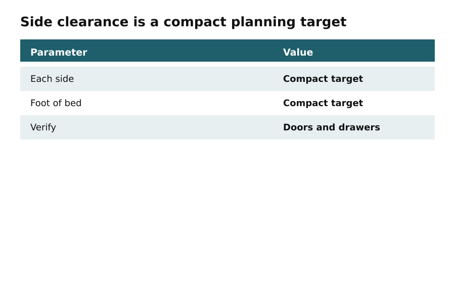
Use 60 centimeters beside the bed where space is constrained; increase it where possible.
Think of this as your Room Kit. It is a set of simple rules and measurements you can trust. There is no guesswork, only choices that align with how you live. By the end, your bedroom will be serene in color and proportion, and it will be efficient in the ways that matter when you are tired and short on time.
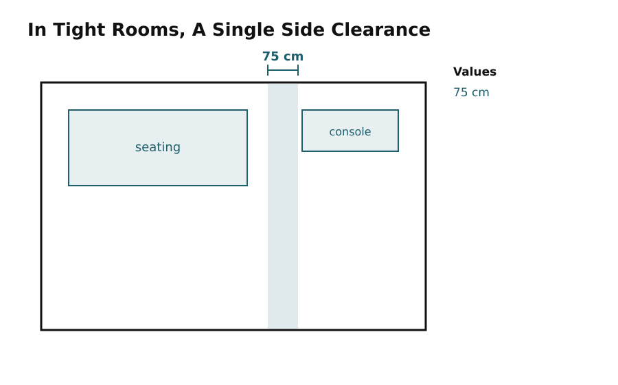
In tight rooms, a single side clearance of 75 centimeters with the other side near a wall can work if you can fully open the wardrobe doors without pinching the walkway.
restful sleep and you need storage that handles clothes, linens, and personal items with minimal visual noise. In many 1 BHK homes, the bed crowds the wardrobe, nightstands get oversized, and windows leak light or street noise. You end up with hard to reach shelves, under bed chaos, and surfaces that attract clutter again. The result is a room that looks busy and feels unsettled.
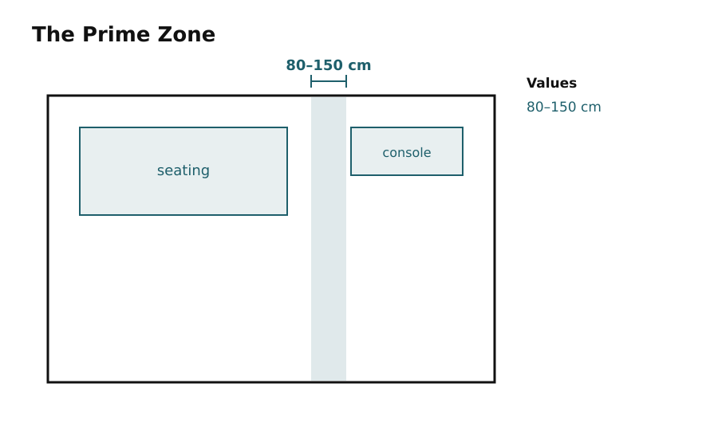
The Prime Zone is from about 80 to 150 centimeters off the floor, which is chest to eye level.
This chapter solves that tension. You will create a plan where ease of movement and light control come first. Storage will be zoned to match your daily rhythm. Textiles will be chosen inside a Quiet Color Envelope so you do not add noise with good intentions. Measurements will be precise, because proportion is the secret that makes a small room feel composed.
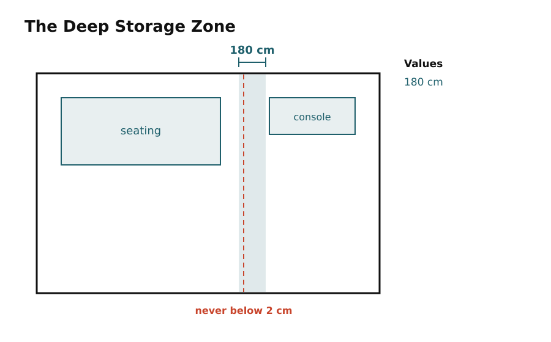
The Deep Storage Zone is above 180 centimeters or hidden under the bed. Choose containers that are shorter than your clearance by at least 2 centimeters to prevent scraping.
First, place the bed for balanced sight lines and safe walkways. Second, map sleep conditions with the Sleep Sanctuary Map. Third, manage daylight and noise with the Two Layer Curtain Strategy. Fourth, design wardrobe interiors with Wardrobe Zoning so daily items are easy, weekly items are reachable, and rare items are tucked away. Fifth, scale nightstands and lighting to your bed so function and elegance meet.
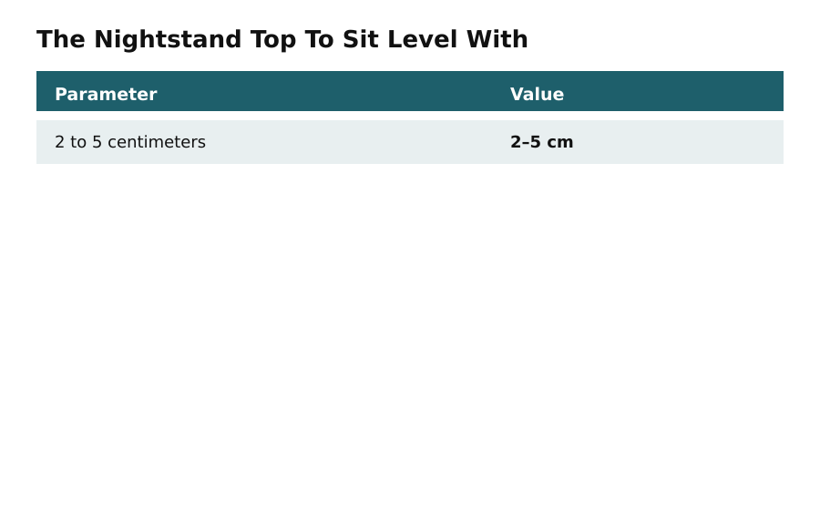
Aim for the nightstand top to sit level with the mattress top or within 2 to 5 centimeters.
Sixth, expand storage under the bed in a way that stays invisible and labeled. Every choice sits inside your unified palette from Design DNA. Your goal is cohesive calm. You will apply your 80 percent surface rule to nightstands and dressers so the room resets easily. You will also add renter friendly upgrades, a simple measurement cheat sheet, and optional zones for a small desk or vanity if needed.
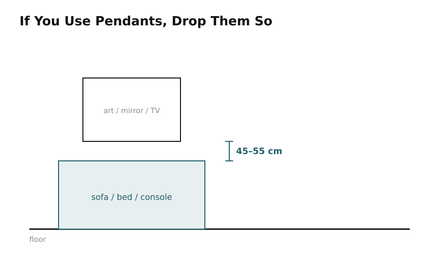
If you use pendants, drop them so the bottom of the shade sits about 45 to 55 centimeters above the nightstand surface.
floor and a tape measure. Your bed is the anchor, so orient it to support a calm view. If possible, place the headboard against the longest uninterrupted wall. Use 60 centimeters as a compact planning target on each side where space is constrained, and 60 to 75 centimeters at the foot. Increase the gap where possible, and verify wardrobe doors, drawers, and actual circulation — including carrying laundry. This is not a universal comfort or accessibility requirement. In tight rooms, a single side clearance of 75 centimeters with the other side near a wall can work if you can fully open the wardrobe doors without pinching the walkway.
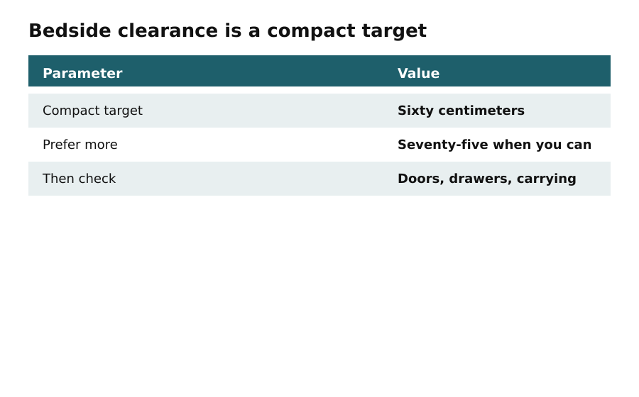
Use 60 centimeters as a compact planning target where space is tight. Increase it where possible and verify doors, drawers, and circulation.
Check door swing angles. If your wardrobe doors swing into the bed, shift the bed to adjust clearances or consider changing door hardware to open from the opposite side. Balance what you see when you wake. A window view is ideal. If you face a wardrobe, add a soft textile or art above the headboard to anchor attention. Keep mirrors away from direct sight lines from the pillow if reflections feel busy. In narrow rooms, consider centering the bed with pendant lamps in place of large nightstands to free floor space.
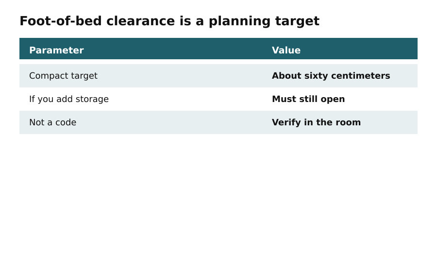
Sixty centimeters at the foot is a compact planning target for a trunk or bench, not a universal minimum. Confirm the piece can open.
Sleep Sanctuary Map, Light, Sound, And Temperature Adults typically need seven to nine hours of sleep. You will protect that with your Sleep Sanctuary Map. Divide the room into three zones. Zone A is the window wall, which controls light and noise. Zone B is around the bed, which manages sound and temperature at the body level. Zone C is the wardrobe and door area, which handles movement and early morning light leaks.
In Zone A, seal light with well fitted curtains, then soften noise by adding fabric mass and minimizing gaps. In Zone B, add soft surfaces near the bed. A small rug on each side absorbs sound at foot traffic points. Keep electronics dim and away from eye level. In Zone C, use a door sweep or a fabric draft stopper to reduce corridor light and airflow during sleep. If a fan or air conditioner is in the room, check its angle so air flows along the ceiling then down, rather than directly across your face.
Two Layer Curtain Strategy Use two curtain layers for control without renovation. Hang a sheer layer closest to the window to soften daylight and provide privacy during the day. Add a blackout layer in your palette for night. If you have a street light or early sun, extend the blackout layer wider than the window frame and mount it higher to limit light bleed.
Choose curtain fabric with a matte finish to avoid visual glare. For noise, a heavier blackout fabric adds sound absorption. If you have a sliding door to a balcony, use floor length panels that kiss the floor rather than puddle, which collects dust. Wardrobe Zoning, Prime, Secondary, Deep Storage Design wardrobe interiors for your daily rhythm. Divide storage into three zones by height.
The Prime Zone is from about 80 to 150 centimeters off the floor, which is chest to eye level. This is where daily wear and absolute essentials go. Use a single hanging rail or two half rails if your wardrobe height allows. Place a shallow drawer for underwear and socks here if possible. The Secondary Zone is below 80 centimeters and above 150 centimeters.
Store weekly wear and shoes here. Use pull out baskets or drawers for folded items so you do not stack too high. The Deep Storage Zone is above 180 centimeters or hidden under the bed. Place rare use items, occasion wear, and spare linens here. Use labeled bins with uniform sizes. The label is the key. It saves time and keeps your surfaces clear because you will not pull out five boxes to find one item.
Nightstand And Lamp Proportion Proportion is elegance. Right size your nightstands so they support what you actually use. Measure your mattress height from floor to top. Aim for the nightstand top to sit level with the mattress top or within 2 to 5 centimeters. Choose a width that allows a lamp base and a small tray, not an open shelf that invites clutter.
In tight rooms, a wall mounted shelf can replace a full nightstand. For lamps, use a shade that hides the bulb at eye level when you are seated. If you use pendants, drop them so the bottom of the shade sits about 45 to 55 centimeters above the nightstand surface. Dimmer controls near the bed are more valuable than fancy shades. Renter friendly stick on dimmers make this easy.
Under Bed Storage That Stays Invisible Under bed space is precious. Use low profile bins or rolling drawers that match your palette, or zip bags for seasonal linens. Measure the clearance under your bed. Choose containers that are shorter than your clearance by at least 2 centimeters to prevent scraping. Assign categories, then label on the side. Place the most used category toward the foot for easier reach. Avoid mixed contents, which invite rummaging and clutter.
Quiet Color Envelope For Textiles Your Quiet Color Envelope is a simple rule. Choose bedding, throws, and pillows inside your palette's softer tones. Use solids or small texture rather than busy patterns. If your palette has a calm base color, make it the dominant bedding color. Add one accent pillow in a deeper tone or a subtle stripe. Consistency beats variety in a sleep space. Keep sheen low. Satin and shiny surfaces can read as visual noise in small rooms.
Measurement Cheat Sheet Exact numbers bring confidence. Use these quick measurements as you plan.
centimeters from floor, adjust to eye line.
headboard, center width on bed. Renter Friendly Upgrades With Big Impact Make smart changes that do not require construction. Add stick on dimmers for bedside lamps to reduce blue light and create wind down lighting. Install peel and stick wall panels or fabric headboard panels to anchor the bed visually. Use peel and stick decals in palette tones to create a soft focal wall. Swap wardrobe handles for a simple, matte finish handle that aligns with your palette. These small changes lift the room without risk.
Optional Zones, Desk, Vanity, And Child Pathways If your bedroom must include a compact desk or vanity, keep it visually light. Use a narrow top and one concealed organizer. Mount a cable channel under the top to hide cords. Place the desk opposite the bed, not beside it, so work items do not creep onto nightstands. If a child sleeps in the room, keep a clear, unobstructed route to the child's sleeping area appropriate to the layout and required access. Sixty centimeters is only a compact planning example, not a child-safety standard. Age, furniture, supervision, emergency egress, and crib or bed configuration all matter. Use a soft rug and a small night light with low lumens placed low and away from adult sight lines. Keep toys in one rolling bin that lives under a chair or in the wardrobe Secondary Zone.
Implementation Strategy Follow this sequence to apply the Bedroom Room Kit. Step 1, Measure And Sketch. Draw your bedroom on paper with key dimensions. Mark the window, door swings, wardrobe doors, and any obstructions. Add your bed dimensions including mattress height. Note current clearances. Step 2, Place The Bed. Test the bed against the longest uninterrupted wall. Adjust until walkways work in this room: 60 centimeters is a compact planning target where space is tight; increase it where you can. Confirm that wardrobe doors and drawers open without conflict.
Step 3, Map The Sleep Sanctuary. Identify Zones A, B, and C. Choose curtain layers, rug positions, and door light control based on your needs. Decide where dimmer controls will go. Step 4, Plan Wardrobe Zoning. Empty the wardrobe. Divide interior height into Prime, Secondary, and Deep Storage. Assign rails and shelves accordingly. Add labeled bins for Deep Storage and a shallow drawer or basket for Prime essentials.
Step 5, Scale Nightstands And Lighting. Measure your mattress height. Choose nightstands that match the height. Select lamps or pendants based on your clearance. Install dimmers and set a soft lighting plan. Step 6, Set Under Bed Storage. Measure under bed clearance. Choose low profile containers and assign categories. Label and place for access. Keep colors aligned with your palette to maintain visual calm.
Step 7, Wrap Textiles In Your Quiet Color Envelope. Choose bedding in your calm base color. Add one accent pillow. Avoid pattern clutter. Confirm that your textiles feel soft to the eye and touch. Step 8, Add Renter Friendly Upgrades. Install fabric headboard panels, decals, and hardware swaps. Review against your palette card from Design DNA. Step 9, Photograph And Review. Take simple photos from the door and the bed. Compare to your palette and your 80 percent surface rule. Adjust items until surfaces read calm and clear.
Real World Application Case Study One, A Narrow Room With A Large Wardrobe. This 1 BHK has a bed that originally blocked the wardrobe. The owner shifted the bed 10 centimeters, placed it on the longest wall, and moved one nightstand to a wall mounted shelf to free floor space. They used the Two Layer Curtain Strategy to cut early light and street noise. Wardrobe Zoning placed daily wear at chest height and shoes in a pull out drawer in the Secondary Zone. Under bed storage held spare linens in two labeled zip bags. The room now clears easily, and mornings are faster because daily items are in the Prime Zone.
Case Study Two, A Room With A Desk And A Child's Floor Bed. The adult bed moved to center the window view and to keep a clear, unobstructed route to the child's sleeping area — 60 centimeters here is a compact planning example, not a child-safety standard. A compact desk with a cable channel sits opposite the bed. The owner used a floor rug to absorb sound near the child's bed and added a low night light. Curtains followed the Two Layer Curtain Strategy, with a blackout layer in a deep palette tone that matched the headboard fabric panel. Wardrobe Zoning placed weekly wear above eye level and rare items in a top bin. The child's toys live in one rolling bin under the desk. The room feels calm, and both sleep and work happen without visual clutter.
Common Pitfalls Avoid oversizing nightstands and lamps. Large tops invite clutter and push the bed into walkways. Do not ignore door swing conflicts with the wardrobe. You will resent the bump every morning. Skip busy patterns on bedding, even if they are pretty. They break your Quiet Color Envelope and create visual noise. Do not stack folded clothes too high in the wardrobe. High stacks topple and create mess. Avoid under bed storage without labels. You will pull out everything to find one item, which re clutters surfaces. Finally, do not forget dimmers. Fixed bright light damages sleep rhythm and mood.
Do this
Measure your bedroom, then sketch clearances and door swings.
Install sheer plus blackout curtains, mounted high and wide to limit
Rebuild your wardrobe interior into Prime, Secondary, and Deep
Swap nightstands or add wall shelves to match mattress height and
Set up labeled under bed containers for spare linens and rare use
Choose bedding and one accent pillow inside your palette's calm
Before you move on
Place the bed for balanced sight lines and safe walkways, then
Use two curtain layers to control light and soften noise without
Zone the wardrobe by height so daily wear lives at chest to eye level.
Scale nightstands and lamps to the bed for function and elegance.
Choose low profile under bed storage that is labeled and aligned with
Wrap textiles inside a Quiet Color Envelope for a serene mood.
Chapter
Bedroom Declutter And Styling: Calm Surfaces, Smart Wardrobes
Your bedroom should feel like a quiet exhale at the end of the day. In this chapter, you will learn how to declutter and style your bedroom so it resets to calm every day, with surfaces that stay open and a wardrobe that actually supports how you live.
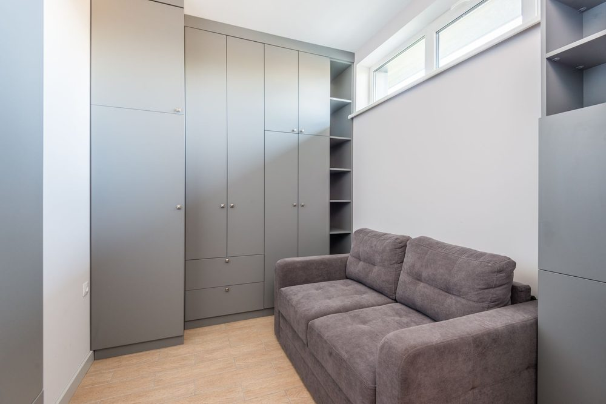
30-Day Plan — Day 16
Capsule Wardrobe Grid
In this apartment
Riya and Arjun live in a compact 1 BHK in Pune. Their wardrobe was overflowing with clothes they rarely wore, making it difficult to find what they needed. They decided to create a Capsule Wardrobe Grid to streamline their clothing choices.
A Capsule Wardrobe Grid aligned to your palette reduces decisions and supports daily ease.
Start by mapping out your typical seasonal wardrobe on a single page. Create rows for categories such as work tops, casual bottoms, outer layers, sleepwear, and lounge. For Riya and Arjun, their lean grid included five work tops, four casual tees, three bottoms, one jacket, one dress, two lounge sets, and two sleep sets.
Each category should have columns for quantity, palette color, and fit notes. Use your unified palette from previous chapters to ensure color cohesion. Riya and Arjun chose neutrals with one accent color, which made their wardrobe visually appealing and functional.
The goal is not to have a universal number of items but to ensure alignment with your lifestyle. If you live in a monsoon region, prioritize quick-drying fabrics. This grid will help you make informed decisions about what to keep and what to exit.
Before you move on
Draft your Capsule Wardrobe Grid with categories, counts, and palette colors.
Keep only items that fit comfortably and align with your grid.
Exit items that do not match your palette or are rarely used.
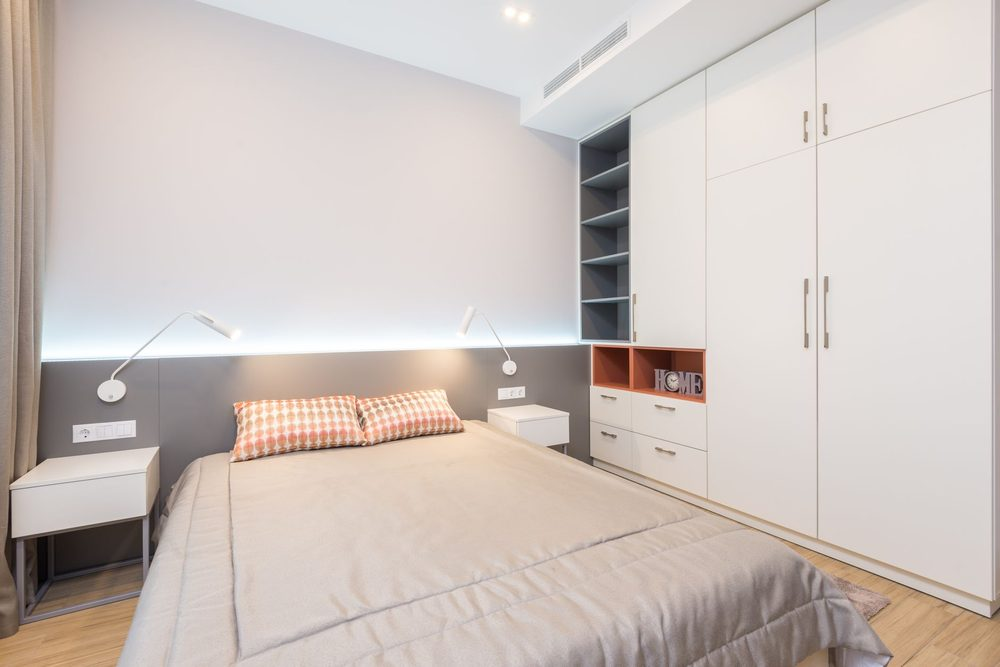
30-Day Plan — Day 17
Keep, Edit, Exit
In this apartment
In their Pune apartment, Riya and Arjun tackled their wardrobe using the Keep, Edit, Exit method. They pulled out their hanging items and assessed each piece against three questions.
Keep, Edit, Exit is a fast and humane way to shape a functional wardrobe.
To begin, pull one category at a time from your wardrobe. For Riya and Arjun, they started with hanging items. Each piece should be evaluated based on three questions: Does it fit comfortably today? Does it match the capsule grid? Is the color and finish inside your palette? If the answer is yes, keep it.
If an item could work with minor tailoring or repair, set it aside in a separate bag for editing. Items that do not align should be exited immediately. This process is not punitive; it is a commitment to ease and functionality in your wardrobe.
Riya and Arjun placed their exit items in a donation box right away to prevent them from returning to the rail. This quick decision-making process helped them streamline their wardrobe significantly.
Before you move on
Run Keep, Edit, Exit for hanging items, folded items, footwear, accessories, and linens.
Keep only items that fit comfortably and align with your grid.
Exit items that do not match your palette or are rarely used.
30-Day Plan — Day 18
Hanger Parity Rule
In this apartment
Riya and Arjun noticed that their mixed hangers contributed to visual noise in their wardrobe. They decided to implement the Hanger Parity Rule to create a calmer space.
The Hanger Parity Rule quiets the rail and improves visibility instantly.
Visual calm starts with consistency. Riya and Arjun chose one style and color of hanger to replace all their mixed hangers. This single change quieted the rail and improved visibility, making it easier to see all their clothing options.
They opted for slim velvet hangers, which not only looked sleek but also saved space. All hangers were placed in the same direction, ensuring that each sleeve had breathing room. This organization transformed their wardrobe into an ordered line of their capsule, rather than a crowded mess.
By maintaining hanger parity, they found that their wardrobe felt lighter and more inviting, making it easier to choose outfits each day.
Before you move on
Replace all hangers with a matching set, and set them in the same direction.
Ensure all hangers are of the same style and color for visual calm.
Space items so each sleeve has breathing room.
30-Day Plan — Day 19
Laundry Loop
In this apartment
Mina, a stylist living in a small Bengaluru apartment, struggled with laundry piling up on her dresser. She decided to implement a Laundry Loop to maintain order.
A defined Laundry Loop prevents freshly washed items from landing on surfaces.
Mina mapped out her laundry loop in three parts. First, she placed her hamper near her wardrobe, making it easy to drop clothes as soon as she undressed. This simple change reduced the temptation to leave clothes on chairs or the floor.
Next, she set a fixed wash day for Sundays, with a backup micro load rule when her hamper reached three-quarters full. This structure ensured that laundry was managed regularly and did not become overwhelming.
Finally, Mina created a folding station on her bed, where she could sort and fold items by color and category before returning them to her wardrobe. This loop kept her space clear and organized, allowing her to maintain a serene environment.
Before you move on
Place your hamper beside the wardrobe for easy access.
Set two wash days in your calendar to maintain a routine.
Create a folding station near the wardrobe for efficient organization.
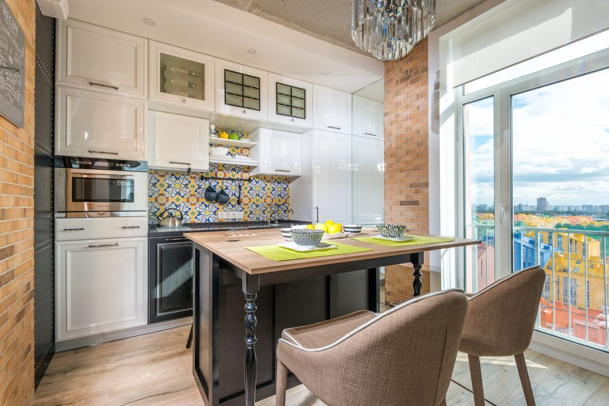
Chapter
Kitchen Room Kit: Counters, Cabinets, And Daily Flow
Kitchen Room Kit: Counters, Cabinets, And Daily Flow Chapter Introduction Your kitchen is the engine of your home. In a compact 1 BHK, it sets the pace for your day, and it can either energize or drain you. You have already built a unified palette and practiced the 80 percent surface rule in the living room and bedroom. Now you will translate that same clarity into the kitchen where safety, speed,
Room kit
Kitchen Room Kit: Counters, Cabinets, And Daily Flow
Prep span and appliance count are planning heuristics. Workflow and footprint decide what actually fits.
Kitchen Room Kit: Counters, Cabinets, And Daily Flow Chapter Introduction Your kitchen is the engine of your home. In a compact 1 BHK, it sets the pace for your day, and it can either energize or drain you. You have already built a unified palette and practiced the 80 percent surface rule in the living room and bedroom. Now you will translate that same clarity into the kitchen where safety, speed, and cleanliness matter most.
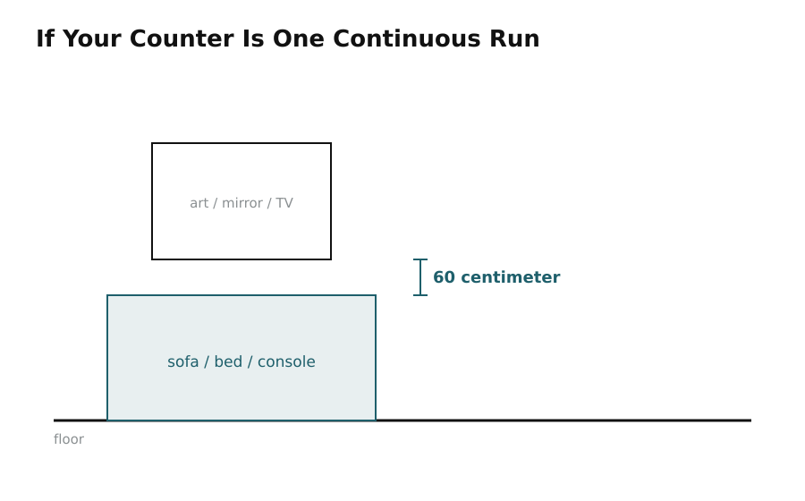
If your counter is one continuous run, a 60-centimeter clear prep span between sink and cooktop is a preferred starting target where space permits. Sink-to-cooktop layout is not universal. In a very compact kitchen, protect the largest continuous prep patch you can — even 45 centimeters — and keep appliances off that patch. Choose the brighter side for Prep and Serve, and keep Cook opposite, but ensure at least 90 centimeters walkway.
This chapter gives you a Kitchen Room Kit you can measure, install, and maintain. You will define a Kitchen Zone Map that fits your layout, set a Countertop Capacity Cap to protect prep space, and build a Golden Prep Zone that keeps knives, boards, towels, and frequently used tools within one step. You will multiply storage vertically with a ladder of hooks, rails, and magnetic strips, label everything so it runs on autopilot, and align textiles and accents to your palette in a crisp 60, 30, 10 ratio. By the end, your kitchen will be mapped, calibrated, and ready for the declutter sprint in the next chapter.
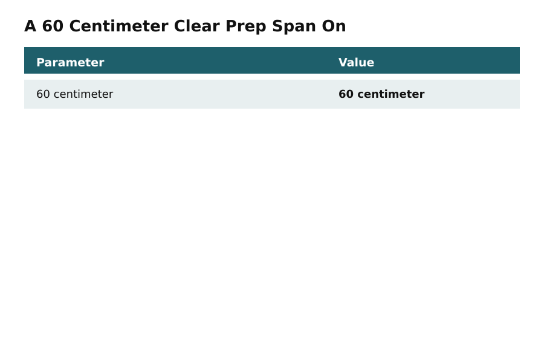
Prefer a continuous prep patch on one side, not divided by the sink, as a starting target where space permits.
linked problems. Counters are crowded with small appliances, prep tools are scattered, and shelves hide a jumble of pantry and cookware. The result is slow meal prep, higher risk of cuts or burns, and constant visual noise that stretches into your living room sightlines. When counters lose clear working space, you cut vegetables over the sink or the stove, and you stack items on top of items. Small appliances creep into every spare inch. Drawers hold duplicates you never use.
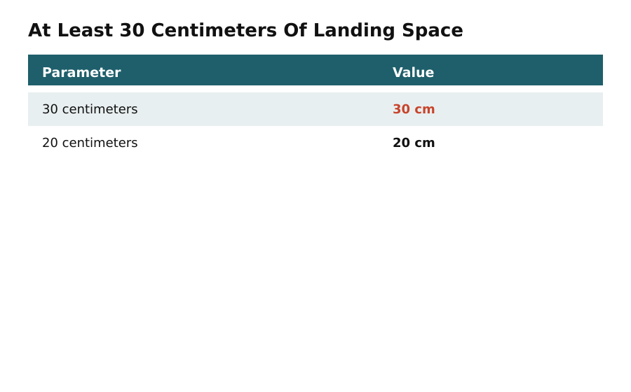
Keep at least 30 centimeters of landing space on one side of the cooktop for hot pans and 20 centimeters on the other side in very tight kitchens.
Without a zone plan, you walk back and forth to fetch items during cooking. Without labels and a clear capacity rule, the kitchen reverts to clutter after every meal. In a compact footprint, every centimeter matters. You need a structure that makes daily flow simple, safe, and fast, and that protects the 80 percent surface rule you have already embraced.
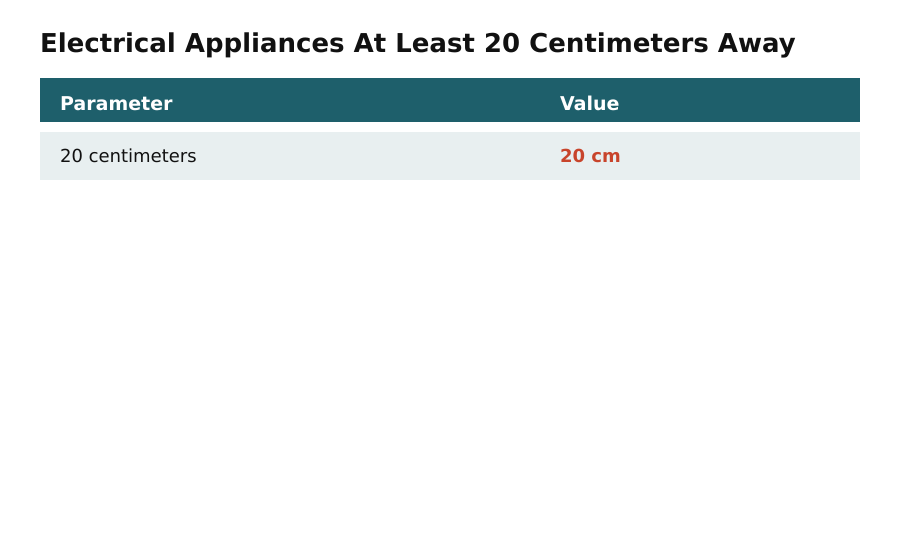
Keep electrical appliances at least 20 centimeters away to avoid splash exposure.
on your layout, single wall, galley, or L shaped. This sets the foundation for where things live and how you move.
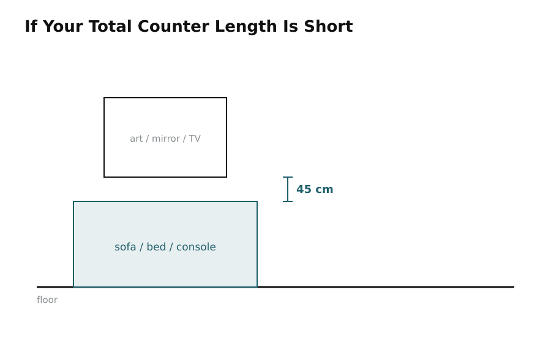
If your total counter length is short, protect 45 centimeters and treat it as sacred.
of items allowed on the counter. This protects a continuous prep zone and stops appliance creep.
• Subtract the minimum prep span you will protect, 60 centimeters if possible, 45 centimeters if very tight.
knives, chopping boards, towels, salt, and your top three tools within one step. This speeds your work and reduces risk.
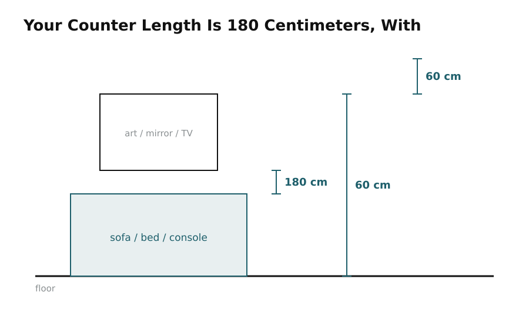
Your counter length is 180 centimeters, with a 60 centimeters sink and 60 centimeters cooktop.
risers, and slim caddies to multiply capacity without crowding the counter or floor.
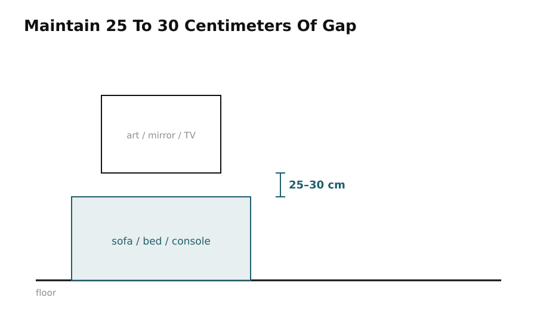
Maintain 25 to 30 centimeters of gap between shelves for typical plates and jars.
to the right place. Labels remove decision fatigue and lock in maintenance.
Single wall. Anchor Prep near the sink. Place Cook at the hob or cooktop. Clean is the sink with drying rack and cleaning caddy. Serve is the section nearest the exit to the dining area. If your counter is one continuous run, a 60-centimeter clear prep span between sink and cooktop is a preferred starting target where space permits. Sink-to-cooktop layout is not universal. In a very compact kitchen, protect the largest continuous prep patch you can — even 45 centimeters — and keep appliances off that patch. Galley. Choose the brighter side for Prep and Serve, and keep Cook opposite, but ensure at least 90 centimeters walkway. Clean stays at the sink side. Prefer a continuous prep patch on one side, not divided by the sink, as a starting target where space permits.
L shaped. Prep sits on the longer leg, Cook near the corner but not crowding it, Clean at the sink, Serve at the leg nearest the dining area. Avoid placing the cooktop in the corner to prevent heat traps. Maintain a 30 centimeter buffer on either side of the cooktop for safety. Counter Clearances And Safe Placement
for daily prep. If your total counter length is short, protect 45 centimeters and treat it as sacred.
the cooktop for hot pans and 20 centimeters on the other side in very tight kitchens. Avoid storing flammable items near this area. Keep oil bottles at least one arm length from the flame or heat source.
sink. Keep electrical appliances at least 20 centimeters away to avoid splash exposure.
clearance behind for cords and ventilation. Avoid placing them under hanging fabric or paper. If steam is involved, such as electric kettles, keep them away from under cabinet bottoms to prevent moisture damage. Optimal Shelf Heights And Access
150 centimeters from the floor. This range suits reach for most adults without stretching.
centimeters, lower shelves or base cabinets, to reduce lift strain.
170 centimeters. Use a stable step stool for safe access.
shelves for typical plates and jars. Use risers in cabinets to stack without creating visual clutter. Set The Countertop Capacity Cap You will calculate a cap that limits what lives on the counter every day. Use this simple formula.
Do not treat one appliance per 60 centimeters as a maximum-capacity rule. The real constraint is available prep space plus each appliance's footprint plus workflow. Use 60 centimeters as a starting planning heuristic: if the leftover counter after the prep patch is smaller than the appliance you actually use, that appliance lives in a cabinet or garage, not on the prep patch.
sink and 60 centimeters cooktop. Add 20 centimeters for buffers. Usable length is 40 centimeters. You must protect 60 centimeters for prep. Since your remainder is negative, you place zero small appliances on the counter. Everything goes into cabinets or an appliance garage. Build The Golden Prep Zone Choose the exact spot for daily chopping and mixing. Install the following within one step.
slim container or rail. If a container lives on the counter, it counts toward the capacity cap. Multiply Storage With The Vertical Storage Ladder Start at eye level and work down.
This clears counter space and keeps edges visible.
and cook interface. Use S hooks for flexible placement.
aligned with your palette, neutral or your accent color.
the tray out to use, then slide back in. This is your appliance garage. Label Logic That Makes Maintenance Automatic Use simple, clear labels at the front edge of shelves and on bin faces.
items with dates. Labels remove thinking in the moment and make it easy for anyone else to put items back where they belong. Plan Your Pantry And Spice Strategy Measure each shelf. Choose modular bins that fit the width in pairs or trios so gaps do not invite scatter. Use straight sided bins to maximize capacity.
one rice type, one breakfast cereal, two cooking oils. This limits overflow.
visual noise. If the package is stable and clean, keep it. Decant messy or floppy packaging into clear containers with airtight lids.
original jars in a single tray. Align labels consistently on the front. Use your accent color on the tray or label band to tie to your palette. Renter Safe Upgrades For Big Impact
protects surfaces and signals a landing zone.
cooktop or sink to break grease and align with your secondary color.
that matches your palette. Keep originals to reinstall later.
prep zones and improve safety. Integrate Your Palette With Textiles And Accents Maintain 60, 30, 10. Let your kitchen finishes be the 60 percent base. Use textiles for 30 percent presence, towels, mitts, and a runner. Allow 10 percent for small accents, a soap dispenser, an oil tray, or a single plant. Keep repetition tight. For example, two towels, one runner, one mitt, and one small accent.
Appliance Garage Options That Keep Counters Quiet Use a tray on a lower shelf for blender and mixer. Add inside cabinet caddies for kettle and toaster if space allows. If the kettle must stay out, place it on a small tray and count it toward the cap. Store rarely used gadgets in labeled bins above 170 centimeters. Implementation Strategy Follow this step by step sequence.
tray placement, or labels based on experience. Real World Application Consider three common compact scenarios. Single wall kitchen with limited counter depth. Protect a preferred prep patch — 60 centimeters where space permits, or the largest continuous span you can in a compact kitchen. The remainder is insufficient for daily appliances, so the kettle and toaster live on a tray inside a base cabinet. A magnetic strip above the prep span holds knives. A slim rail with hooks holds tongs and a towel. Two modular bins on the upper shelf, one for Dry Grains and one for Breakfast, keep items visible. Under cabinet lights brighten the prep area. The result is a clear counter with only a salt and oil tray present. Meal prep speeds up because everything is within one step.
Narrow galley kitchen with 90 centimeters walkway. Assign Prep and Serve on the brighter side, Clean near the sink, and Cook opposite. Install a rail above Prep for cups and tools. Use under shelf risers to increase plate storage. Store blender on a tray in the base cabinet. Label Logic ensures anyone can find and return items. Traffic is smooth because zones are obvious and the walkway stays clear.
L shaped kitchen with open sightline to the living room. Place Cook away from the corner to avoid heat traps. Protect a prep span on the longer leg. Use a slim wall caddy for spices near Prep. Textiles match the palette, runner in the secondary color, towels in the accent. The 60, 30, 10 ratio keeps the look cohesive without crowding. Counters remain largely clear.
From the living room, the kitchen reads calm and consistent. Common Pitfalls
prep zone shrinks and clutter grows. Respect the cap.
Do this
Measure counter lengths, sink and cooktop widths, and cabinet shelf
Draw your Kitchen Zone Map and tape it on the wall for a week. Adjust
Set your Countertop Capacity Cap, write it on a card, and tape it
Install a magnetic strip or a slim knife tray. Add a board rack and towel
Place salt, pepper, and oil on a small tray and position it inside the
Fit two modular bins in the pantry and label them. Set par levels for
Add one renter safe upgrade, under cabinet light or hardware swap, to
Create an appliance garage with a tray on a lower shelf. Label the
Put a step stool near the pantry if shelves above 170 centimeters are
Before you move on
Zones come first. Map Prep, Cook, Clean, and Serve to your layout
Protect prep space. A continuous 60-centimeter prep span is a preferred starting target where space permits, and
Capacity caps control clutter. Calculate and enforce a maximum
Keep tools within one step. The Golden Prep Zone reduces movement
Go vertical smartly. Rails, hooks, magnets, and risers add capacity
Label everything. Labels make maintenance automatic for everyone in
Align textiles to your palette. Use the 60, 30, 10 ratio for calm
Use appliance garages. Store small appliances on trays inside
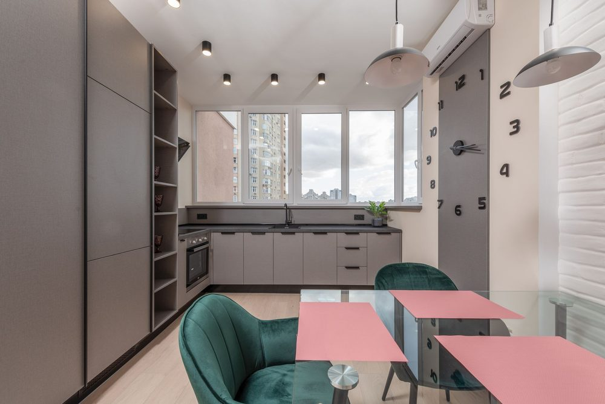
Chapter
Kitchen Declutter And Styling: Minimal Counters You Can Maintain
Your kitchen shapes how your entire home feels. A calm kitchen invites you into a day that begins smoothly and ends with an easy reset. Building on what you set up in Counters, Cabinets, And Daily Flow, you now have zones and capacity rules. The next step is execution. You will declutter with speed, set clear quantity limits, and style for function and beauty, all while hitting your eighty percent clear counter target.
30-Day Plan — Day 20
3 2 1 Declutter Sprint
In this apartment
Riya, living in a compact 1BHK in Pune, often found her kitchen counters cluttered with multiple utensils and gadgets. She decided to tackle the mess by running a 3 2 1 Declutter Sprint. Setting a timer for three minutes, she pulled everything out of her utensil drawer and grouped items by type.
Speed matters because slow sorting invites attachment.
Start with utensils. Set a three-minute timer. Pull everything out. Group by type. Keep your best two spatulas, one ladle, one solid spoon, one slotted spoon, one tongs, one whisk. Release duplicates, damaged items, or single function gadgets you do not use. Do two rounds. The first pass is obvious decisions. The second pass tightens to par levels. The one final pass is for sentimental or rare use items. If an item does not serve at least monthly and does not fill a safety or essential gap, it does not belong in a compact kitchen.
• Open Shelves Styling, you use the 60 30 10 ratio and the Anchor Accent Balance triangle.
Run the same sprint for gadgets, cookware, serveware, pantry, and plastic containers. For cookware, keep one frying pan, one deep pan, one pot, and one pressure cooker if you use it. For serveware, keep a core set of plates and bowls that matches your household plus two guests. For plastic containers, keep four containers in two sizes and create a lid file to prevent lid chaos. A lid file is a vertical organizer where lids stand on edge in a narrow bin or tray.
Riya successfully reduced her utensils to two spatulas and one ladle, making her kitchen feel more spacious and organized.
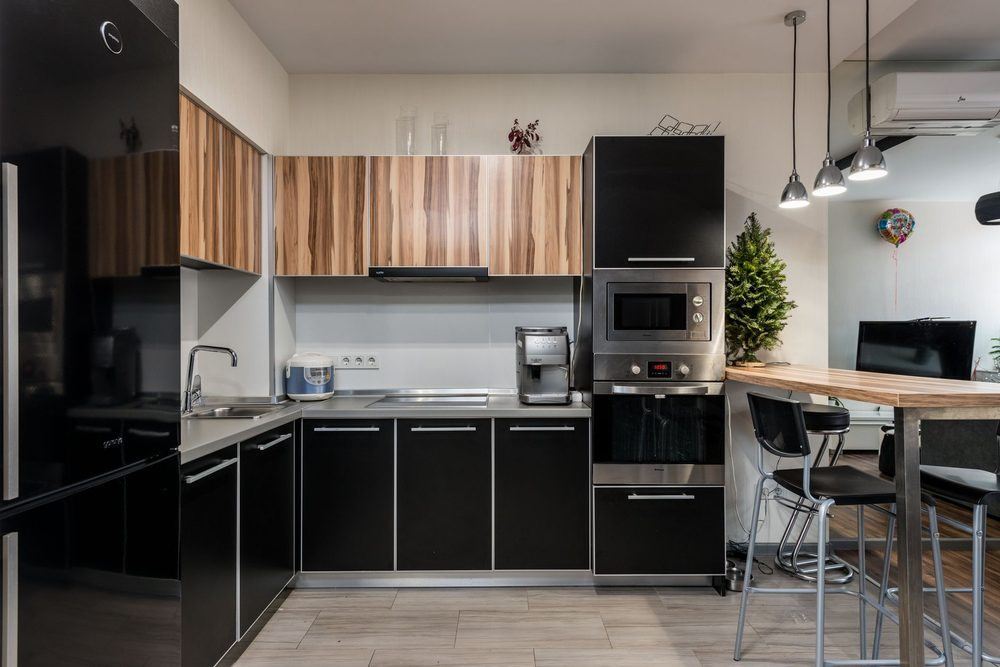
30-Day Plan — Day 21
Par Level Planning
In this apartment
In her small kitchen, Riya realized that setting par levels was crucial for maintaining her newly decluttered space. She assessed her cooking habits and the number of people she typically served.
Par levels turn endless kitchen choices into clear limits you can live by.
Par levels remove the decision paralysis of infinite choices. To set par, answer three questions. What is your weekly cooking rhythm? How many people do you serve on a typical day? How much space do you have? If you cook daily and wash dishes nightly, you can operate with fewer utensils and plates. If you cook for two and host occasionally, plan for everyday par plus two. If drawers are tight, reduce small tools first.
Examples of par levels to start: Utensils, two spatulas, one ladle, one slotted spoon, one solid spoon, one tongs, one whisk, one peeler, one grater. Knives, one chef knife, one paring knife, one serrated knife. Mixing, three bowls nested, one measuring jug, one set of measuring spoons. Bakeware, one tray, one rack. Drinkware, four mugs, four glasses. Adjust up or down to fit your life. Apply the Countertop Capacity Cap from your previous planning. If an appliance does not fit within your capacity cap, it needs to live in an appliance garage or on a tray inside a cabinet.
By setting these limits, Riya found it easier to maintain her kitchen organization and avoid unnecessary purchases.
30-Day Plan — Day 22
Open Shelves Styling
In this apartment
Riya decided to style her open shelves to enhance the aesthetics of her kitchen while keeping it functional. She focused on using her color palette effectively.
Open shelves can be beautiful and minimal when styled with 60 30 10 and strict negative space.
Open shelves can be beautiful and minimal when they are mostly functional. Use your palette in a 60 30 10 ratio. Sixty percent base color, thirty percent secondary, ten percent accent. Arrange with the Anchor Accent Balance triangle. Anchor heavy objects low and to one side, such as a stack of plates. Accent with one plant or a lidded jar in your accent color. Balance with a lighter item, such as a row of bowls. Keep strict negative space. A third of each shelf should remain clear. This protects the eighty percent counter target by reducing visual noise and giving eyes a place to rest.
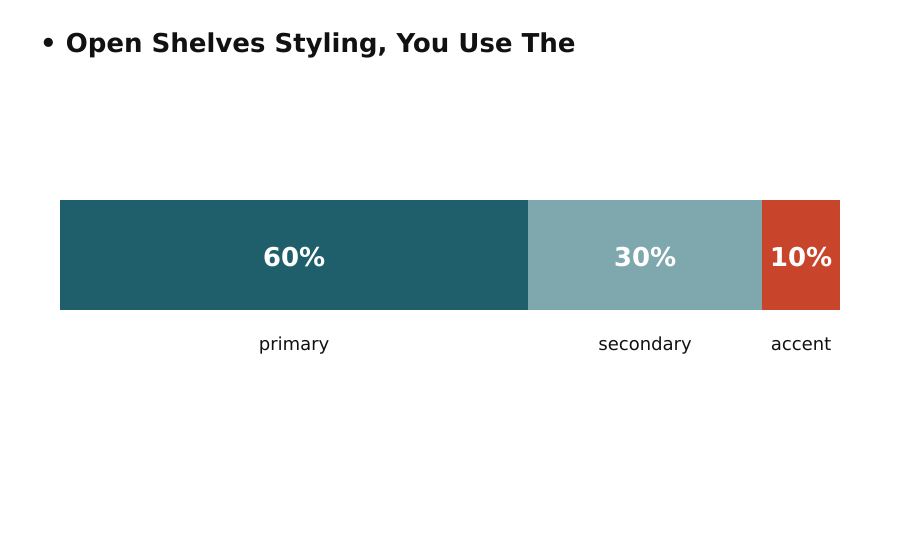
Open Shelves Styling, You Use The 60 30 10 ratio.
Use trays to group small items so the shelf reads as deliberate. Riya placed her plates on the bottom shelf, a few decorative jars on the middle shelf, and a small plant on the top shelf, creating a balanced look that was both functional and visually appealing.
By styling her shelves this way, Riya not only improved the look of her kitchen but also made it easier to access frequently used items.
30-Day Plan — Day 23
Nightly Shutdown Checklist
In this apartment
After successfully decluttering and styling her kitchen, Riya established a nightly shutdown routine to maintain her progress.
The Nightly Shutdown Checklist locks in your eighty percent clear counters.
Five steps close the kitchen: clear sink, wipe counters, reset towels, empty bin if full, five minute floor sweep. This simple routine helps Riya end her day with a clean slate, making it easier to start fresh the next morning.
Riya found that by taking just a few minutes each night to follow this checklist, her kitchen remained organized and inviting. She enjoyed the calming effect of a clean kitchen, which made her cooking experience much more pleasant.
The Nightly Shutdown Checklist became a cherished ritual for Riya, reinforcing her commitment to maintaining her newly organized kitchen.
Before you move on
Clear sink
Wipe counters
Reset towels
Empty bin if full
Five minute floor sweep
Chapter
Execution: Sequence, Sourcing, And What Happens After Day 30
The day-by-day tracker is the Action Calendar. This chapter tells you how weeks fit together, how to sequence rooms during the 30 days, and how weekly reset starts after Day 30 — not as a second transformation.
How the 30 days fit
How the 30 days fit together
In this apartment
Aarav and Meera live in a 1 BHK in Pune. They set aside thirty-minute evening blocks during the week and a ninety-minute block on weekends to execute their plan. On Day 1, they walk through each room for ten minutes, listing visual noise and functional friction while photographing each zone.
Use the Action Calendar as the only Day 1–30 list. This overview is the map, not a second calendar.
The 30-day transformation has one numbering system. Open the Action Calendar when you need the daily checkbox. This chapter is the map: Week 1 assess and palette, Weeks 2–3 rooms, Days 24–30 finish and re-check, then weekly reset after Day 30.
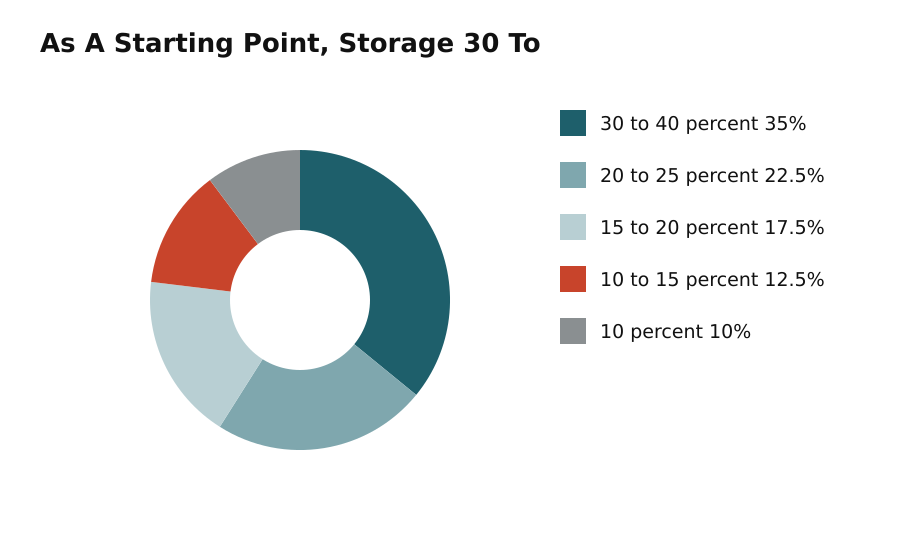
As a starting point, storage 30 to 40 percent, lighting 20 to 25 percent, textiles 15 to 20 percent, art 10 to 15 percent, contingency 10 percent.
Aarav and Meera photograph each zone on Day 1. They measure living-room, bedroom, and kitchen dimensions as a separate task from the 80 percent unobstructed-area check. They do not write 'measure 80 percent' — those are two boxes.
Their scorecard showed living room surfaces at 90 percent clear, bedroom 85 percent, kitchen 80 percent after dinner.
By Day 3 they score visual noise with the 0–5 anchors. They treat a total under 7 as a planning target, and they work any factor scored 4 or 5 first.
Do this
Walk through each room for ten minutes, listing visual noise and functional friction.
Finalize your palette card with selected colors and finishes.
Measure key zones in each room to ensure accurate dimensions.
Before you move on
Walk through each room and list visual noise.
Finalize your palette card with colors and finishes.
Measure key zones in the living room, bedroom, and kitchen.
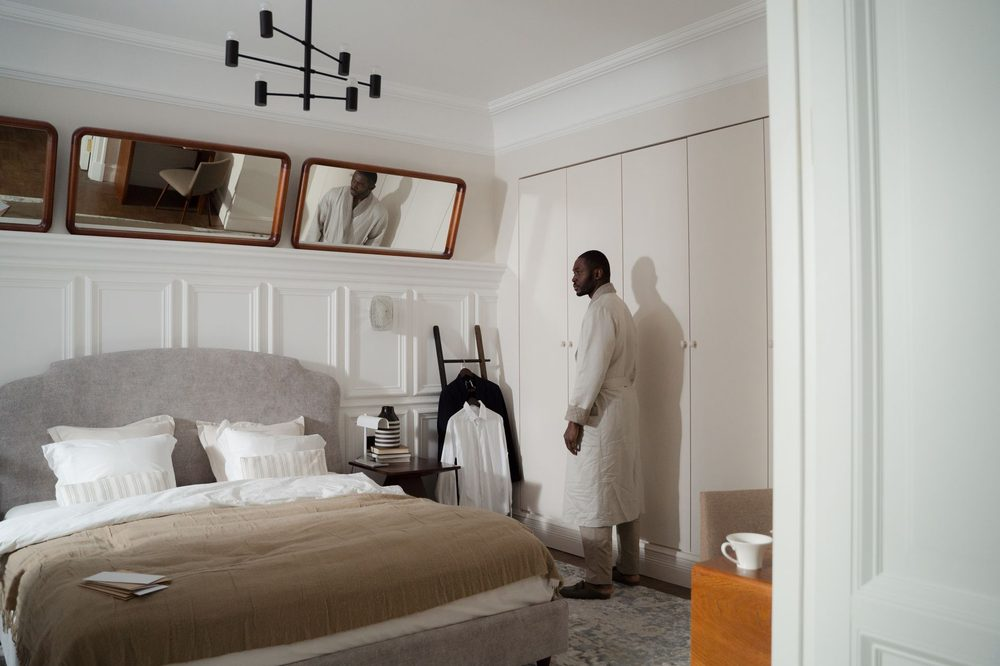
During the 30 days
Room sequence during the 30 days
In this apartment
In their Bengaluru rental, Aarav and Meera tackle the living room declutter. They clear surfaces to reach 80 percent, removing extra decor and duplicates, and box temporary removals. They install layout anchors from their Living Room Room Kit, placing the rug and aligning the sofa.
Do rooms in calendar order. Do not start a new Day 1 when you open a room-kit chapter.
Daily tasks are structured to ensure you focus on one room at a time, minimizing decision fatigue. Start with the living room, clearing surfaces to achieve 80 percent clarity. Remove extra decor and duplicates, boxing temporary removals to maintain a clean space.
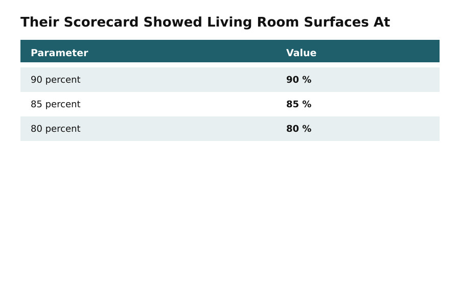
Their scorecard showed living room surfaces at 90 percent clear, bedroom 85 percent, kitchen 80 percent after dinner.
Install layout anchors from your Living Room Room Kit, ensuring the rug is placed correctly, the sofa is aligned, and a media or art focal point is established. This creates a visual anchor that enhances the room's functionality and aesthetic.
As you progress, order or install essentials like curtains that fit your palette, a floor lamp, and a storage solution for remotes and papers. Style with restraint, using one anchor and two accents while balancing with negative space.
Do this
Clear surfaces to reach 80 percent clarity in the living room.
Install layout anchors and align furniture according to your plan.
Order or install essential items that match your palette.
Before you move on
Clear surfaces in the living room to reach 80 percent.
Install layout anchors and align furniture.
Order or install essential items like curtains and lamps.
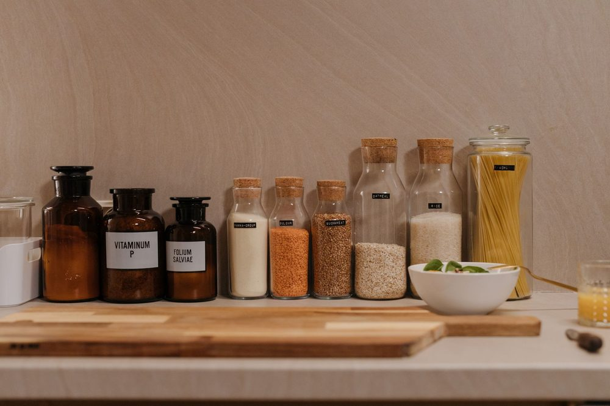
After Day 30
Weekly reset starts after Day 30
In this apartment
Aarav and Meera establish their weekly reset routine in their Mumbai flat. They set aside 20 to 40 minutes every Sunday morning to clear surfaces, reset their spaces, and ensure everything is in order after a busy week.
Weekly reset is maintenance after the transformation, not a second 30-day program.
After Day 30, shift from transformation to maintenance. The weekly reset keeps unobstructed area and visual noise from drifting. It is not Days 1–7 of a new project. Establishing a weekly reset routine is crucial for maintaining the clarity and cohesion of your home. Dedicate 20 to 40 minutes each week to reset your spaces. This includes clearing surfaces in the living room, returning remotes, folding throws, and aligning cushions.
In the bedroom, clear bedside tables, rehang clothes, reset the bedscape, and empty the laundry bin to a fixed spot. This not only keeps your space organized but also prepares you for the week ahead.
In the kitchen, run your nightly shutdown checklist, wipe counters, empty the drying rack, reset towels, and do a quick floor sweep. Document your reset with three photos to track progress and surface percentages.
Do this
Dedicate 20 to 40 minutes for a whole home reset every week.
Clear surfaces in the living room and bedroom, and reset the kitchen.
Document your reset with photos to track progress.
Before you move on
Set aside time for a weekly reset every Sunday.
Clear surfaces and reset each room according to your routine.
Document your reset with photos.
Chapter
30-Day Action Calendar And Habit Tracker
This is the only Day 1–30 list. Each day has one concrete task. Method chapters use the same Day numbers. Weekly reset starts after Day 30.
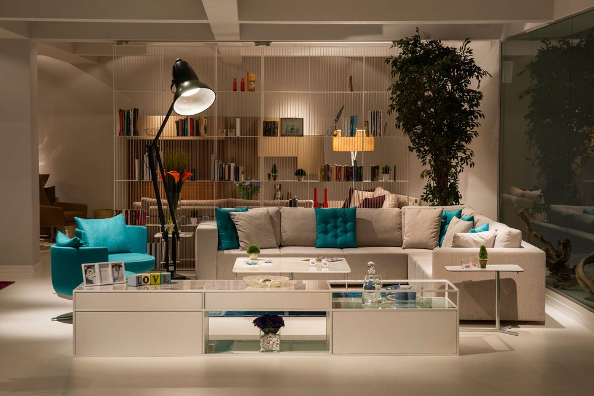
30-Day Plan — Days 1–7
Days 1–7: Assess, measure, palette
In this apartment
Riya lives in a 1BHK in Pune with a 9-foot living room. She begins her transformation by walking through each room, measuring and documenting the space.
Measurement and 80 percent unobstructed area are separate checkboxes. Visual-noise scores are subjective.
This week is Days 1–7 of the same 30-day plan used in the method chapters. Do one task a day. If you miss a day, keep the number — do not restart at Day 1 in the next chapter.
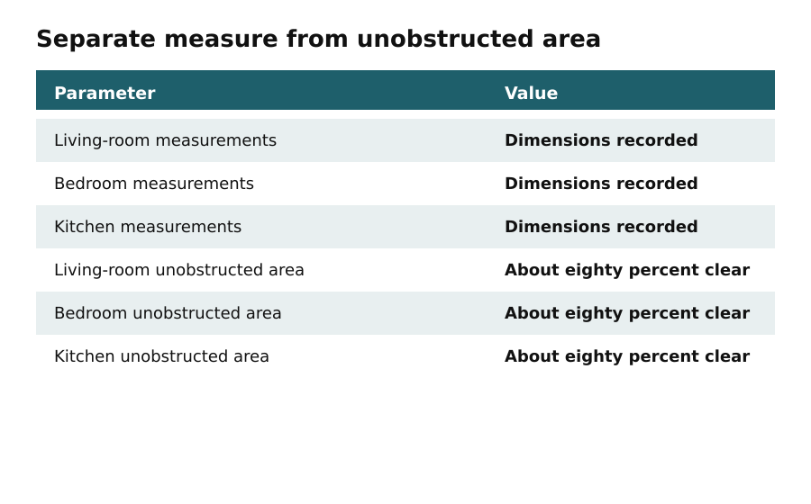
Measurement and 80 percent clarity are two tasks. Clarity means unobstructed usable area, not visual calm.
Day 1 — Photograph every room and list usable horizontal surfaces. Do not score 80 percent yet.
Day 2 — Run Keep / Edit / Exit on living-room surfaces. Out Box now; schedule donation, recycling, resale, or disposal as soon as practical.
Day 3 — Score visual noise 0–5 on density, contrast, height, glare, and cords. Maximum 25. Under 7 is a planning target. Work any 4 or 5 first.
Day 4 — Sketch a zonal layout grid for living room, bedroom, and kitchen.
Day 5 — Block the remaining calendar days on a real week. Confirm that weekly reset is after Day 30.
Day 6 — Audit fixed finishes and undertones. These already occupy part of the palette field.
Day 7 — Choose a base neutral that supports the dominant existing color. Do not force a new primary over finishes you cannot change.
Do this
Photograph rooms and list surfaces (Day 1).
Keep / Edit / Exit living-room surfaces; fill the Out Box (Day 2).
Score five visual-noise factors 0–5 (Day 3).
Before you move on
Day 1 — Photographs and surface list completed
Day 2 — Living-room Keep / Edit / Exit; Out Box filled
Day 3 — Visual-noise scores 0–5 recorded
Day 4 — Zonal grid sketched
Day 5 — Remaining days blocked on a real calendar
Day 6 — Fixed-finishes audit completed
Day 7 — Base neutral chosen after fixed finishes
30-Day Plan — Days 8–14
Days 8–14: Palette lock and living room
In this apartment
Riya explores color swatches in her Pune apartment, aiming to select a cohesive palette for her living room, bedroom, and kitchen.
Apply 60/30/10 after fixed finishes. Living-room days match the method chapters.
Day 8 — Sketch 60/30/10 as a visual guideline after listing what cannot change. Do not calculate exact square footage.
Treat 60/30/10 as a visual heuristic. Fixed finishes already count.
Day 9 — Test swatches on the Light Ladder morning, afternoon, and evening.
Day 10 — Repeat the living-room visual-noise audit with the 0–5 anchors. Note the loudest surface.
Day 11 — Build a surface parking zone so daily objects have a home off the styled field.
Day 12 — Living-room 3-2-1 sprint: three out, two donated or relocated, one edited. Discretionary items only.
Day 13 — Set One-In-One-Out for non-essential decor, clothing, and discretionary household items only.
Day 14 — Optional 5-7-9 styling. Stop when the arrangement reads calm, even if the count is even.
Do this
Lock palette after fixed finishes (Days 8–9).
Living-room noise audit and parking zone (Days 10–11).
3-2-1 sprint and discretionary One-In-One-Out (Days 12–13).
Before you move on
Day 8 — 60/30/10 sketched after fixed finishes
Day 9 — Swatches tested in real light
Day 10 — Living-room visual-noise scores recorded
Day 11 — Surface parking zone set
Day 12 — Living-room 3-2-1 sprint done
Day 13 — Discretionary One-In-One-Out agreed
Day 14 — Living-room styled only as far as it stays calm
30-Day Plan — Days 15–21
Days 15–21: Living-room lock, bedroom, kitchen start
In this apartment
Riya embarks on a 3-2-1 declutter sprint in her Pune living room, focusing on her media console and coffee table.
Keep using the same Day numbers. Bedroom and kitchen kits are references, not a new Day 1.
Day 15 — Set one Anchor / Accent / Balance triangle in the living room. This is a heuristic, not a law.
Day 16 — Capsule wardrobe grid: map what you actually wear in this climate.
Day 17 — Bedroom Keep / Edit / Exit. Out Box immediately; disposal as soon as practical.
Day 18 — Hanger parity so the rail cannot silently refill.
Day 19 — Laundry loop so dirty clothes do not land on the bed or chair.
Day 20 — Kitchen 3-2-1 sprint on discretionary counter objects, not on essential cookware.
Day 21 — Par-level planning for staples you actually cook with.
Do this
Finish living-room triangle (Day 15).
Bedroom wardrobe days (Days 16–19).
Kitchen sprint and par levels (Days 20–21).
Before you move on
Day 15 — Living-room triangle set
Day 16 — Capsule grid filled
Day 17 — Bedroom Keep / Edit / Exit; Out Box filled
Day 18 — Hanger parity done
Day 19 — Laundry loop in place
Day 20 — Kitchen 3-2-1 on discretionary items
Day 21 — Par levels written
30-Day Plan — Days 22–30
Days 22–30: Kitchen finish, re-check, handoff
In this apartment
On Day 30, Riya photographs the same three rooms she shot on Day 1. She schedules the first weekly reset for the following weekend — after the transformation.
Days 24–30 close the transformation. Weekly reset is the next product, not Day 1 again.
Day 22 — Style open shelves only as far as the 80 percent unobstructed-area target still holds.
Transformation, then weekly reset, then long-term maintenance. Do not restart Day 1.
Day 23 — Install the nightly kitchen shutdown checklist.
Day 24 — Finish leftover sourcing and installs from the room kits. Manufacturer instructions win over any number in this book.
Day 25 — Photograph living room, bedroom, and kitchen from the same spots as Day 1.
Day 26 — Re-score visual noise 0–5. Compare with Day 3. Work any remaining 4 or 5.
Day 27 — Check unobstructed usable area on living, bedroom, and kitchen surfaces. This is not the visual-noise score.
Day 28 — Schedule Out Box donation, recycling, resale, or e-waste. Do not dump items to beat a clock.
Day 29 — Walk the three rooms once as a guest would. Note pinch points. 28-inch living-room paths are a tight-space bound, not an accessibility rule.
Day 30 — Write the weekly-reset date. Maintenance starts after Day 30.
Do this
Finish kitchen styling and shutdown (Days 22–23).
Photograph and re-score (Days 25–27).
Schedule Out Box and first weekly reset after Day 30 (Days 28–30).
Before you move on
Day 22 — Open shelves styled without burying the prep patch
Day 23 — Nightly shutdown posted
Day 24 — Leftover installs finished
Day 25 — Day-1 photo pairs shot
Day 26 — Visual-noise re-score done
Day 27 — Unobstructed-area check done (separate from noise)
Day 28 — Out Box disposal scheduled
Day 29 — Guest walk complete
Day 30 — First weekly reset dated after Day 30
Chapter
Unified Color Palette Swatch Workbook
worksheet to finalize a cohesive color palette for a 1 BHK. Audit fixed finishes, test undertones, observe light, and lock a 60, 30, 10 plan across living room, bedroom, and kitchen. Carry room mini cards when shopping to protect decisions.
Workbook
Unified Color Palette Swatch Workbook
worksheet to finalize a cohesive color palette for a 1 BHK. Audit fixed finishes, test undertones, observe light, and lock a 60, 30, 10 plan across living room, bedroom, and kitchen. Carry room mini cards when shopping to protect decisions.
shade ranges, finish sheen, and textures.
week one, then shop and implement in weeks two and three. In week four, declutter to reach 80 percent clear surfaces and review palette consistency across living room, bedroom, and kitchen.
Chapter
Room Kit Measurement And Sourcing
This chapter provides a comprehensive guide to measuring, sourcing, and staging essentials for a successful home transformation. It includes checklists and templates tailored for a 30-day timeline, ensuring that your living room, bedroom, and kitchen are both functional and aesthetically pleasing.
Sourcing kit
Living Room Kit Essentials
In this apartment
Ravi, living in a 1BHK in Pune, has a living room measuring 9 feet by 12 feet. He wants to ensure that his furniture fits perfectly and maintains a clutter-free environment.
Size rugs by placement, not by a 60-percent-area spec. Console ratios are visual starting points.
Start by measuring your living room dimensions accurately, noting the width and length along with the ceiling height. Attach a photo of the space for reference. Choose a rug large enough for the front legs of the main seating pieces to sit on it, while leaving an intentional border of exposed floor around the composition. For Ravi's 9-by-12-foot living room, a 200-by-290-centimeter rug is one example that can hold the sofa's front legs with a visible floor border — not a 60-percent-area calculation.
When choosing curtains, install them at the ceiling or just below, allowing them to drop to the floor. Use 1.5 to 2 times the window width as a fullness starting point. Actual width also depends on panel count, fabric thickness, pleat style, rod extension past the frame, and stacking space. If Ravi's window is about 3 feet wide, 4.5 to 6 feet of fabric width is a fullness starting point, then adjust for panels, pleats, rod extension, and stacking space.
Use 75 to 90 percent of TV width as a visual starting point for the console, then verify the actual TV stand footprint, equipment, wall width, cable routing, speakers, doors or drawers, and visual balance. For Ravi, a 4-to-5-foot console is one example to test against those constraints, not a specification.
Do this
Measure the living room dimensions and ceiling height, and take a photo.
Choose a rug that holds the front legs of the main seating, with an intentional floor border.
Install curtains at the correct height and width.
Before you move on
Room dimensions, width and length, ceiling height, photo attached
Rug placement: front legs of primary seating on rug / full seating group on rug / other intentional layout; then size, source, price, delivery, return window
Curtains, install height at ceiling or just below, drop to floor, width 1.5 to 2 times window as a fullness starting point, fabric, link, price
Media console, 75 to 90 percent of TV width as a visual starting point, then check equipment, wall, and clearance; depth, cable routing, link, price
Coffee table, length at two thirds sofa length, clearance 45 to 50 centimeters, link, price
Shelf heights, lower shelf reserved for baskets, upper for decor, clear surfaces reminder
Sourcing kit
Bedroom Kit Essentials
In this apartment
Anita lives in a 1BHK in Bengaluru. Her bedroom features a bed that needs to be positioned correctly with nightstands and a wardrobe that fits the space.
Match nightstand height to the mattress. Size nightstand width to remaining clearance, not to each-table percentages of bed width.
Measure the mattress height from floor to top so you can choose a comfortable bedside-table height. A 55-to-65-centimeter mattress top is a common sitting-height planning band for many adults, not a lighting rule. For Anita, about 60 centimeters is her preferred sitting height in this example. Then position the lamp so its useful light falls where she needs it without glare — lamp height, shade, and placement do that work, not bed height.
Size each nightstand from the actual clearance beside the bed, not from a percentage of bed width per table. If you use a proportion at all, treat 50 to 75 percent of the bed width as a starting range for the combined width of both nightstands. For Anita's 5-foot bed, that combined starting range is about 2.5 to 3.75 feet, split across the two sides only if both sides have room. Match the nightstand top to the mattress height, then check that doors, drawers, and the walking line still open.
For the wardrobe, ensure that hanging clearances are 150 centimeters for long items and 100 centimeters for short items. The shelf spacing should be 30 centimeters, and drawer heights should be between 15 to 20 centimeters. This setup will maximize storage while keeping the room organized.
Do this
Measure mattress height, match the nightstand top, then place the lamp for glare-free light.
Size nightstands to side clearance; if using a proportion, apply 50 to 75 percent of bed width to both nightstands combined.
Ensure wardrobe dimensions accommodate all clothing types.
Before you move on
Mattress height recorded; nightstand top matched to mattress; lamp placed for useful light without glare
Nightstands, combined width as a starting range if used, each table sized to actual side clearance, top aligned with mattress
Wardrobe interior, hanging clearances, long 150 centimeters, short 100 centimeters, shelf spacing 30 centimeters, drawer height 15 to 20 centimeters
Curtains or blinds, blackout or layered sheer plus blackout, measurements, link, price
Rug placement, two runners or one large, under two thirds of bed, clear walkway
Sourcing kit
Kitchen Kit Essentials
In this apartment
Suresh has a compact kitchen in his Mumbai flat, where he struggles with counter clutter. He needs to optimize his space for functionality.
Up to three daily-use items is a starting count. 80 percent unobstructed area is a separate check.
Choose up to three daily-use items as a starting point, while still checking that approximately 80 percent of usable counter area remains unobstructed. Three objects are not the same as 20 percent occupied area — a kettle, knife block, and fruit bowl might cover much less or much more depending on the counter. Store non-essential or infrequently used items away; keep genuinely daily-use items accessible while protecting the prep zone, especially if they are heavy, hard to retrieve, or used by someone with limited mobility.
Set shelf heights so that everyday plates are at eye level, making them easy to access. Heavy items should be placed lower to avoid strain. Suresh should consider placing his plates on a shelf that is approximately 5 to 6 feet high, allowing for easy reach.
Install task lighting under cabinet strips to enhance visibility during meal preparation. Measure the space accurately to ensure the lighting fits well without obstructing other elements. Suresh should look for strips that are around 2 to 3 feet long, providing ample light without being overpowering.
Do this
Choose up to three daily-use items, then check unobstructed counter area.
Adjust shelf heights for easy access to everyday plates.
Install under-cabinet lighting for improved visibility.
Before you move on
Counter: up to three daily-use items as a start, then confirm about 80 percent of usable area stays unobstructed
Shelf heights, everyday plates at eye level, heavy items lower, labels set
Task lighting, measurements for under cabinet strips, link, price
Bins and dividers, widths and depths per drawer, link, price
Chapter
Weekly Reset Routine and Cleaning Guide
Use this after Day 30. It maintains the 30-day result. It is not a second transformation and it does not restart at Day 1.
After Day 30
Purpose and Benefits
In this apartment
Ravi lives in a 1 BHK in Pune with a busy work schedule. He often feels overwhelmed by clutter and visual noise in his living space. By implementing the weekly reset routine, he aims to maintain a unified aesthetic without daily overwhelm.
Weekly reset is maintenance after the 30-day transformation.
The weekly reset routine is designed to maintain a unified aesthetic without the stress of daily cleaning. By keeping surfaces at 80 percent clear, you can achieve visual calm in your home, making it feel more spacious and inviting.
This routine helps reinforce your chosen color palette by removing off-palette items and spotlighting key accents. It prevents the backlog of clutter from toys, mail, and cooking mess, ensuring that your space remains organized and serene.
By creating shared responsibilities through simple roles and repeatable steps, everyone in the household can contribute to maintaining a tidy environment.
After Day 30
How to Use the Weekly Reset Routine
In this apartment
Sita, a solo renter in Bengaluru, struggles to keep her apartment tidy. She decides to dedicate Sunday evenings to her weekly reset, setting a timer to help her stay focused.
Establishing a routine makes it easier to maintain a clutter-free home.
Choose a fixed weekly slot for your reset routine, such as Sunday evening. This consistency helps you form a habit, making it easier to maintain order in your living space.
Set a timer for 20 to 40 minutes and play your favorite playlist as a cue to start. This not only makes the task enjoyable but also helps you stay on track with your timing.
Assign room leads or shared tasks using the Roles Template. This encourages everyone in the household to take responsibility for their space, making the process more efficient.
After Day 30
Step by Step Room Passes
In this apartment
Anjali, living in a Mumbai flat with limited space, follows the room pass checklist to ensure her living area remains organized and visually appealing.
Structured room passes streamline the cleaning process and enhance efficiency.
For the Living Room, aim to clear surfaces to 80 percent. Move extras to a basket for rehoming later. Fluff and fold textiles, check cables, and display two accent items in your chosen colors while removing off-palette décor.
In the Bedroom, make the bed by smoothing the duvet or sheet and aligning pillows. Reset the nightstand to include only one book or item, keeping the rest clear. Advance the laundry loop by sorting items to the basket and staging the first load, ensuring that bedding and accents align with your color palette.
In the Kitchen, perform a nightly shutdown by clearing dishes and wiping counters. Wipe one fridge shelf, removing expired items, and tidy the bin by replacing liners and staging recycling. Keep only matching towels and countertop items visible to maintain a cohesive look.
After Day 30
Tips for Success
In this apartment
Karan, a young professional in Pune, finds it challenging to keep his apartment organized. He implements some tips for success to enhance his weekly reset routine.
Simple strategies can significantly improve the effectiveness of your cleaning routine.
Keep all your cleaning supplies in one tote at the entry of your home. This makes it easy to grab everything you need for your reset, saving time and effort during the process.
Use a visible timer to keep yourself accountable and prevent perfectionism. This encourages you to focus on completing the tasks within the set time frame, making the reset feel less daunting.
Pair the reset with music or a show intro to create a consistent routine. This not only makes the process enjoyable but also helps you associate cleaning with positive experiences.
30 Day Spaces
Your next room starts here
The 30-day transformation comes first. Weekly reset and long-term maintenance start after Day 30. Same series language — treat numbers as starting points until you test them in the actual rooms.